程序设计基础篇
变量与运算符
变量标识符规范
- 标识符可使用英文字母、数字、下划线及 Python 允许的 Unicode 字符，例如“价格”；首字符不能是数字。
- 不能是关键字
import keyword
keyword.kwlist- 大驼峰：UserName
- 小驼峰：userName
- 下划线命名：user_name
三引号（单引号或双引号）用在变量定义中，用以定义多行字符串内容
mutiple_str = '''
你好
我是Python新手
我的专业是金融科技
'''
print(mutiple_str)
# 输出：你好
# 我是Python新手
# 我的专业是金融科技数据类型
- 常见数值类型有
int、float、complex。bool表示真假，也是int的子类。 - 常见内置类型还包括字符串
str、列表list、字典dict、元组tuple和集合set。number不是内置类型名。 isinstance(x, int)检查一个类型，isinstance(x, (int, float))检查多个类型。单元素元组写作(int,)。
可变对象与不可变对象
- 不可变对象创建后自身不能被原地修改。赋新值是让名称绑定到另一个对象，并不意味着旧对象移动，也不保证新建对象。
常见例子：整数、字符串、元组。

- 可变对象允许修改自身的状态，而不必把变量名改为绑定另一个对象。对象内部的存储方式仍可随实现而变化。
常见例子：列表、集合、字典。

类型转换
- 想转换成什么类型，就用什么函数
int(); str()......
#将列表转化为字典的方式
list_C = ['a','b','c']
list_D = [1,2,3,4]
zip_list = zip(list_C, list_D)
# zip() 返回惰性迭代器；默认在最短输入耗尽时停止
dict(zip_list)
# >>{'a': 1, 'b': 2, 'c': 3}字符串
字符串的运算
test_str = "Python"
test_str*2 # 'PythonPython'
test_str + 'AA' # 'PythonAA'
test_str[0] # 'P'
"y" in test_str # True字符串的编码
- 字符编码：本质是二进制数据与文字的一一对应
- 编码标准
- ASCII（美国信息交换标准编码）早期、无法表示汉字
- Unicode：一种新的编码标准，支持几乎所有书写系统
- 编码方式
- UTF-8（Unicode Transformation Format）最广泛，可以向后兼容ASCII码
.encode() .decode() 的用法
在Python中，.encode() 和 .decode() 是用于处理字符串与字节序列之间转换的方法，特别是在涉及文本编码和解码时。
.encode() 将str转化为bytes，将文本数据转化为特定的编码格式，以便存储和运输
encoded_string = original_string.encode(encoding='utf-8', errors='strict')
# 输出的结果是b'<text>'，b为byte，代表文本已编码- 参数：
- encoding：指定要使用的编码格式，例如 'utf-8'、'ascii'、'latin-1' 等。如果不指定，默认使用'utf-8'。
- errors：指定错误处理方式，如：'strict'（默认）：遇到无法编码的字符时引发UnicodeEncodeError。'ignore'：忽略无法编码的字符。'replace'：用替代字符（通常是 ?）替代无法编码的字符。
decoded_string = byte_sequence.decode(encoding='utf-8', errors='strict')字符串的索引与切片
slice_str = 'FINTECH'
print(slice_str[0:3]) # FIN
print(slice_str[0:3:1]) # FIN
print(slice_str[0:3:2]) # FN
# 切片的规则都是从左往右，如果是从右往左，程序可以运行，但是无结果输出
print(slice_str[-3:-1]) # EC
print(slice_str[1:-1]) # INTEC
print(slice_str[-3:]) # ECH
# 步长为负可以改变输出方向,但是ab也要调换顺序
print(slice_str[-1:-3:-1]) # HC
print(slice_str[::-1]) # HCETNIF字符串查找与计数.find() & .count()
.find(substring, start, end)
.count(substring, start, end)
# 查找功能，返回第一次找到的索引值。未找到，返回-1
print(slice_str.find('F')) # 0
print(slice_str.find('FI')) # 0
print(slice_str.find('FI',1,2)) # -1字符串修改
str.replace(old, new, count) 返回一个新的字符串
str.split(separator, maxsplit) 将字符串按照separator分割，返回一个列表
.capitalize() 首字母大写
.lower() 把所有大写变成小写
.upper() 把所有小写变成大写
.title() 把首字母大写
.strip/lstrip/rstrip() 删除两端空格
字符串判断
.islower(); isupper(); isdigit()；startswith(); endswith()
- 判断是否全部为某值
- 输出True False
列表
基础
Python 中的列表（list）是一种有序、可变的数据结构，可以存储多个元素。列表中的元素可以是任意类型，例如整数、字符串、浮点数，甚至是另一个列表。
列表的索引和切片
同字符串，略
列表的增删改查
# 增（append insert extend）
list.append() #在列表末尾添加一个元素
list.insert(index, a) #在索引处插入
list.extend(list_another) #拓展列表
#如果不想改变原有list，可以采用加号的方式
# 删（del pop clear remove）
list_A = [1, 2, 3, 4, 5]
del list_A[2] # 删除索引为2的元素
print(list_A) # 输出: [1, 2, 4, 5]
# 删除一个范围
del list_A[1:3]
print(list_A) # 输出: [1, 5]
last_element = list_A.pop() # 删除并返回最后一个元素
print(last_element) # 输出: 5
print(list_A) # 输出: [1]
list_A.clear() #删除所有元素
list_A.remove(value) #删除列表中第一个匹配的元素
# 改（通过索引的方式）
# 查（index count）
# 排序（sort sorted reverse）
# sort作用于原列表，且只能作用于列表
# sorted可作用于任何可迭代对象，原列表不变
sorted(list_A)
list_A.sort()列表的推导式
list_P1 = []
for i in range(10):
list_P1.append(i)
#等价于
list_P2 = [i for i in range(10)]
#元组也可以使用推导式生成
tuple_P1 = (i**2 for i in range(100) if i % 2 == 0) #这样会生成生成器表达式，只有在迭代时才会显现，正确做法如下：
tuple_P1 = tuple(i**2 for i in range(100) if i % 2 == 0)
#字典也可以使用推导式生成
dict_P = {i:round(3.14*i,2) for i in range(21)}元组 tuple
- 元组与列表的最大不同特点：元组不允许被修改，提高了代码编写的安全性
num_tuple = (0,1,2)
num_tuple[0] = 1
# TypeError: 'tuple' object does not support item assignment
del num_tuple[2] # 不支持删除单个元素- 元组保存的元素引用不能替换。如果元素本身是列表，可以修改该列表的内容，元组本身仍是不可变对象。
元组的查找
tuple.index() 查找某个数据，如果数据存在，则返回对应的索引，否则会报错
tuple.count(obj) 查找obj的次数
len() 统计长度
- 如果想要定义单个元素元组，需要用这样的形式：
a = (10,),不加逗号输出的是int型
字典 dict
- 可用于存储成对的数据，键值对一一映射
字典的定义
- 不要有重复的键
dict_A = {'age':20, 'gender':'male'}
dict_B = {} #定义空字典
dict_C = dict() #函数定义法字典操作
dict_A['age'] = 21 #改
dict_A['name'] = 'YY'#增
#有则覆盖，无则添加
len() #查看**键值对**的个数
dict_A.keys() #返回所有键的列表
dict_A.values() #同理
dict_A.items() #返回（key,value）列表字典的遍历
for key in dict_A.keys():
print(key)
for value in dict_A.values():
print(value)
for key,value in dict_A.items():
print('{} = {}'.format(key,value))集合 set
- 无序不重复，不支持下标操作
set_A = {1,2,3}
set_B = set() 定义空集
集合的增删
set_A.add()
set_A.update(100) #错误，update的对象必须为可迭代对象
set_A.update([100]) #正确
#如果update的是字典，只会添加key
set_A.remove(100) #删除指定的数据
set_A.discard()
#remove和discard的区别在于：如果要删除的元素不在集合中，remove会抛出一个keyError异常
set_A.pop() # 返回删除的元素集合的∩与∪
a & b 交集
a | b 并集
公共操作
- 拼接操作：字符串、列表、元组
- 复制操作：字符串、列表、元组
- in 和 not in：输出布尔值。字符串、列表、元组
- len()：全部适用
- del()
- max()
- min()
- range()
- enumerate()
for index,value in enumerate(list_A, start = 1):
print('{},{}'.format(index,value))引用与拷贝
引用
- 赋值
b = a时，两个名称引用同一个对象。两个值相等，不代表它们引用同一个对象。
拷贝（复制）
- 浅拷贝：只拷贝对象的引用，不复制对象本身。如果修改子对象，所有引用他的对象都会受到影响
- 深拷贝：复制对象及所有子对象，创建完全独立的样本
import copy
original_list = [1, 2, [3, 4]]
shallow_copied_list = copy.copy(original_list)
# 修改原始列表中的子列表
original_list[2][0] = 'Changed'
print(original_list)
print(shallow_copied_list)
[1, 2, ['Changed', 4]]
[1, 2, ['Changed', 4]]
# 浅拷贝的结果会受到影响，二者共用一个地址original_listB = [1, 2, [3, 4]]
deep_copied_listB = copy.deepcopy(original_listB)
# 修改原始列表中的子列表
original_listB[2][0] = 'Changed'
print(original_listB) # 输出: [1, 2, ['Changed', 4]]
print(deep_copied_listB) # 输出: [1, 2, [3, 4]]
#二者地址不同格式化输出
.format()
num_1 = 22
num_2 = 45
print('{}+{}={}'.format(num_1,num_2,num_1+num_2))
# 22+45=67转义字符
默认具有特殊意义的字符
\n 换行字符
\t 制表位字符（Tab、四个空格）
需要输出“\、“、'”时，需要加上\来保证原样输出
end = "" 取消换行运算符
- 常用算术运算的优先级：先算幂
**，再算乘、除、整除和取余* / // %，最后算加减+ -。 - 圆括号可以改变默认顺序。
2 + 3 * 4的结果是 14，(2 + 3) * 4的结果是 20。 - 增量赋值示例：对数值变量，
c += a相当于把c + a赋给c。
输入
input([prompt]) 程序会等待用户的输入，输入完成后程序才会继续向下执行
- input会把接收到的任意用户输入的数据当做字符串进行处理
- 一般用一个变量进行承接
日期与时间
- Python中用于处理时间和日期的模块
生成器
迭代器与迭代器协议
- 迭代器（iterator）的特点
- 惰性计算：不会一次性将所有数据加载到内存，而是按需计算
- 一次性：用完即废
- 大部分以列表或列表型为对象的参数都可以接收迭代器对象
- 生成器（generator）是创建迭代器的一种简单方法，生成器是一种特殊的迭代器。
- 迭代器协议是一种另对象可遍历的一种通用方式。
yield方法创建生成器
def square(n = 10):
print('生成1至{}的平方'.format(n))
for i in range(1,n+1):
yield i**2 #使用yield而非return，目的是为了创建生成器，
gen = square()
print(gen)
# generator object square at 0x000001D9E285A880>
# 不会直接输出，当请求生成器的元素时，它才会执行代码
for x in gen:
print(x, end = ' ')
# 生成1至10的平方
# 1 4 9 16 25 36 49 64 81 100
# 注：这个生成器只能使用一次，如果希望重新生成，需要重新调用square()生成器表达式
- 生成器表达式与列表表达式基本相似，括号不同
gen = (x**2 for x in range(1,100))
for index, value in enumerate(gen):
print(index+1, value)- 生成器表达式可以直接作为函数的参数
dict((i,i**2) for i in range(100))
sum(x**2 for x in range(1,100))itertools模块
- itertools.groupby(iterable, key)
- 根据每一独一的key，生成
(key,sub-iterator)元组 - 用法：
for key, sub in itertools.groupby(iterable, key): groupby()只对相邻的元素按key分组。如果希望按同一个键合并分组，先用sorted()按同一个键排序。
- 根据每一独一的key，生成
import itertools
students_scores = [
('Alice', 85),
('Bob', 92),
('Charlie', 85),
('David', 90),
('Eva', 92),
('Frank', 75),
('Grace', 90),
]
scores = lambda x : x[1] #对列表中每一个元素（元组），取出第二个即分数
sorted_students = sorted(students_scores, key = scores) #先排序
for score, group in itertools.groupby(sorted_students, scores):
print(score, list(group))
#如果希望按照ABC进行分组，可以先：
def grade_key(x):
if x[1] >= 90:
return 'A'
elif x[1] >= 80:
return 'B'
else:
return 'C'
#之后将函数改为grade_key就可以了
#注：如果希望永久储存，可以使用list.append()方法- itertools.product()方法
itertools.product 其实就是一个高效生成“笛卡尔积”的工具，相当于多层嵌套 for 循环的懒加载版。
from itertools import product
for p in product([1, 2], ['a', 'b']):
print(p)
(1, 'a')
(1, 'b')
(2, 'a')
(2, 'b')判断与循环
IF与比较
if True :
判断的返回值为True；
非零和非空对象
if False
判断的返回值为False
0、空对象、None
逻辑运算符
and 与
or 或
not 非
补充：random模块
random 模块是 Python 内置的用于生成随机数和进行随机操作的工具包
import random
random.random() # 生成[0,1)之间的随机浮点数
random.ranint(a,b) # 生成[a,b)之间的整数
list_A = [0,1,2,3]
random.choice(list_A) # 随机选取费控序列中的一个元素
random.shuffle() # 打乱（就地打乱，无返回值）
random.uniform(a,b) #均匀分布
random.gauss(mu,sigma) #高斯分布for、while循环
- for循环：循环遍历序列（列表、元组、字典、集合、字符串）中的元素
- while循环：在条件为真的情况下重复执行代码块
- 二者都支持break和continue语句
- break：直接跳出循环
- continue：跳过当前循环的剩余部分，开始下一次循环
# 用for循环生成一个99乘法表
for i in range(1,10):
for j in range(1,i+1):
print('{}*{}={}'.format(i,j,i*j),end = '\t') # end 添加制表位，不换行
print() # 用于每行结束后进行换行
# 一个例子：设计一个简单的游戏程序。程序会随机生成一个0到100之间的整数，并要求用户猜测这个数字。根据用户的输入，程序会给出提示，告诉用户猜测的数字是 "too high" 还是 "too low"。用户有 5 次机会，如果用户在 5 次内猜对了数字，则输出 "Congratulations! You guessed it right!"，如果 5 次机会用完了还没猜对，则输出 "Game over! The number was X"，其中 X 是正确的数字。
import random
corr_num = random.randint(0,100)
max_tries = 5
user_tries = 0
# 第一步先完成猜测的循环逻辑
while user_tries < max_tries:
guessed_num = int(input('Please input your number:'))
if guessed_num == corr_num:
break
else:
user_tries += 1
if guessed_num > corr_num:
print('Too High, {} times left!'.format(max_tries - user_tries))
if guessed_num < corr_num:
print('Too Low, {} times left!'.format(max_tries - user_tries))
# 将胜负判断的逻辑摘出，这样可以更加清晰
if user_tries < max_tries:
print('Cong!')
else:
print('Sry, the correct number is {}'.format(corr_num))三元表达式
- if else的简便写法，但是会牺牲可读性
true-expr if condition else false-expr函数篇
- 把具有独立功能的代码组合成一个个小模块
- 提高写代码的效率——代码复用
- 函数标识符：与变量的命名规范相同
- 当函数有多个返回值的时候，返回的是元组
def FuncTypeTest():
return 1,'Func',2.2
type(FuncTypeTest())
# tuple函数传参
以 \(f(x)=x^2+2x+1\) 为例，定义中的 \(x\) 是形式参数；调用 \(f(1)\) 时，传入的 \(1\) 是实际参数。
参数类型
必选参数
def func(a,b) 传参时有几个形参，就传入几个实参
默认参数
def func(a=12) 有则更新，无则默认
不定长参数（可变参数）
def func(*args) 可接收多个元素，以元组的形式传入
def FuncArg(*args):
for i in args:
print(i)
FuncArg(1,2,3)关键字参数
def func(**kwargs) 可接受任意数量的键值对，以字典形式传入
def FuncKwarg(**kwargs):
for key, value in kwargs.items():
print(key, value)
FuncKwarg(name='YY',age = 21)- 注意传参方式与字典定义方式的不同
dict_A = {'name':'YY','age':21}
参数混合传递（同时传入默认、不定长、关键字参数）
顺序：默认-不定长-关键字
def example_function(required_arg1, required_arg2, *args, **kwargs):
print(f"必选参数1: {required_arg1}")
print(f"必选参数2: {required_arg2}")
print(f"不定长参数 (*args): {args}")
print(f"关键字参数 (**kwargs): {kwargs}")
example_function(1, 2, 3, 4, 5, optional_arg1=6, optional_arg2=7)
# 必选参数1: 1
# 必选参数2: 2
# 不定长参数 (*args): (3, 4, 5)
# 关键字参数 (**kwargs): {'optional_arg1': 6, 'optional_arg2': 7}变量的作用域
作用域指的是变量可以生效的范围
- 函数内赋值通常创建局部绑定；在未赋值的情况下，可以直接读取全局名称。
- 重新绑定全局名称需要
global；若只是修改该名称所指向的可变对象（如items.append(x)），不需要global。
global_var = 20
def Func_test_1():
global_var = 10
print(global_var)
Func_test_1()
print(global_var)
# 输出 10、20：函数里的赋值创建了局部名称，没有重新绑定全局变量global：在函数内部声明全局变量
global_var = 20
def Func_test_1():
global global_var #把a声明为全局变量
global_var = 10
print(global_var)
Func_test_1()
print(global_var)
print
# 两个输出的都是10，说明global声明后，在函数内部可以修改全局变量nonlocal与嵌套函数
Python 支持嵌套函数（函数内部再定义函数）。内嵌函数可以访问外层函数的变量，但不能修改，除非使用 nonlocal 关键字。
- 与global的区别，nonlocal 只影响嵌套函数中的外层函数的局部变量，而不会修改全局变量。
匿名函数（lambda函数）
- 主要用于定义一些简单的函数，通常用于让代码更加简洁
拓展：与函数结合的操作
map()用于对可迭代对象的每个元素应用一个函数，并返回一个包含结果的迭代器。
map(func, iterable)
list_origin = []
for i in range(30):
list_origin.append(i)
list_square = list(map(lambda x:x**2,list_origin))
print(list_square)错误与异常处理
基本语法
- 作用：在运行失败时可以优雅地返回参数
- 基本结构
def attempt():
try:
risky_code #可能会引发错误的语法
except:
handle_exception #当错误的情况下，如何解决
else:
if_no_fault #如果没有错误，可用else承接
finally:
#无论是否发生异常，finally代码块中的内容都会被执行
pass- 可以在except后指定异常类型，或者用元组捕获多个异常，如果不进行指定，except会捕获所有异常。
- 可以用多个except块捕获多个异常
Ipython中的异常
当在ipython中执行语句发生报错时，ipython会默认打印完整的报错追溯，会将堆栈中每个错误点附近的上下几行代码打印出。
文件与操作系统
open()方法
- 在数据分析中，一般采用的
pd.read_csv()的方式与文件进行交互，因此用Python原生的方式进行文件处理的场景并不多，但是还是很重要。 - 一般使用
with open() as f的方式处理文件，当with语句结束后，可以将文件自动释放回操作系统，而不用使用close() - 用read读取文件
#这里的r为默认的只读模式
with open(path, 'r', encoding = 'utf-8') as f:
content = f.read()
print(content)- 把文本提取到列表中（按照每行）：
with open(path, 'r', encoding = 'utf-8') as f:
list_txt = []
for line in f:
list_txt.append(line.rstrip())os库
本节待补。
面向对象编程
两大思想：面向过程和面向对象
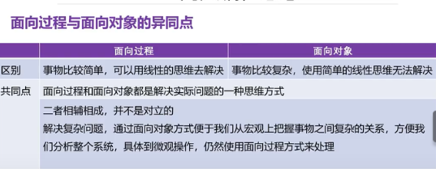
基础概念
- 类：是一个蓝图或模板，用于定义对象的属性和行为
- 对象：是类的实例，具有类的属性和方法
- 封装：把属性和方法封装到类里
- 继承：子类继承父类的属性和方法
- 多态：同一方法在不同对象上可能表现不同的行为
核心语法
定义和创建对象
- 创建对象并调用方法：
self是对象自身的引用，必须作为第一个参数传入类的方法
class Person:
# 方法是类内部的函数
def say_hello(self):
print("Hello, I am a Person!")
person1 = Person() # 实例化
person1.say_hello() # 调用方法，输出：Hello, I am a Person!- 构造函数 init 是一个特殊的方法，在创建对象时自动调用，用于初始化对象的属性。
class Person:
def _init_(self, name, age):
self.name = name
self.age = age
def introduce(self):
print('My name is {self.name},my age is {self.age}.')
person1 = Person()
person1.introduce()实例属性与类属性
- 实例属性可在
__init__中通过self定义。- 每个对象都有独立的实例属性，互不干扰
- 类属性定义在类的顶层，属于整个类
class Cats:
species = 'felid'
def __init__(self, name, age):
self.name = name
self.age = age
# 实例化
catyie = Cats("Catyie", 2)
# 调用类属性
catyie.species
Cats.species # 两种调用方法返回同样的结果
# 调用实例属性
catyie.name
catyie.age实例方法、类方法与静态方法

class Counter:
count = 0 # 类属性
def _init_(self):
Counter.count += 1
# 实例方法
def get_instance_count(self):
return f'This instance is #{Counter.count}.'
# 类方法：获取当前计数
@classmethod # 装饰
def get_total_count(cls):
return f'Total instances created:{cls.count}'
# 静态方法：比较
@staticmethod
def compare(a,b):
pass
c1.Counter()
c2.Counter()
c1.get_instance_count() # 实例方法
Counter.get_total_count() # 类方法
Counter.compare(10,5) # 静态方法类继承、子类与父类
- 继承是子类从父类获取属性和方法的过程，子类继承了父类的功能，可以直接使用父类的已有代码，也可以扩展或修改它。
class ParentClass:
# 父类代码
pass
class ChildClass(ParentClass):
# 子类代码
pass多态
本节待补。
组合
本节待补。
魔术方法
本节待补。
抽象类与模板类
本节待补。
dataclass对象
本节待补。
Python进阶
装饰器
- 一个最简单的装饰器的例子：
def simple_decorator(func):
# 传入一个函数作为参数d
def wrapper():
print("即将执行函数...")
func()
print("函数执行完毕。")
return wrapper # 返回wrapper
@simple_decorator
def greet():
print('你好')
# 调用
greet()装饰器语法 @simple_decorator 等价于以下赋值：
greet = simple_decorator(greet)- 上面的赋值得到
wrapper闭包；它保留对外层func的引用。 - 通用包装函数可用
wrapper(self, *args, **kwargs)接收方法参数。 - 如果还要给装饰器本身传参，则用三层函数：
def record_step(name): # （1）外层：接受一个 name 参数，告诉装饰器你要记录哪一步
def decorator(fn): # （2）中层：真正的装饰器，接受被装饰的函数 fn
def wrapper(self, *args, **kwargs): # （3）内层：把 fn 包起来的「外衣」
res = fn(self, *args, **kwargs) # — 执行原函数，拿到返回值
self.step_outputs[name] = res # — 记录结果到实例属性里
return res # — 再把原函数的返回值交还出去
return wrapper # 把 wrapper 这个新函数返回
return decorator # 把 decorator 返回，供 @record_step 用asyncio异步并发
基本语法
import asyncio
async def foo():
print("start")
await asyncio.sleep(1)
print("end")
# 并发运行
async def main():
tasks = [foo(), foo(), foo()]
await asyncio.gather(*tasks) # 并发执行
asyncio.run(main())async def关键字表示该函数为协程函数gather可以让多个协程“同时”跑，遇到await会自动切换任务。run会创建事件循环（event loop），并执行到完成。
模块、包、工程化导入
本节待补。
类型注解
本节待补。
CLI程序与argparse库
CLI（Command Line Interface），命令行接口。用户通过在终端中输入文本命令，向程序传递指令、参数和选项，程序根据这些输入执行相应操作。
它的核心语法是：
命令 主程序 位置参数 可选参数
常见文件与目录操作
bash
pwd # 查看当前目录
ls # 查看目录内容
ls -l # 以详细格式显示
ls -a # 显示隐藏文件
ls -lh # 以更易读的单位显示文件大小
cd project # 进入某个目录
cd .. # 返回上一级目录
cd ~ # 返回用户主目录
mkdir data # 创建文件夹
mkdir -p data/raw/stock # 创建多级目录
# ……CLI 的核心价值在于：把程序的运行逻辑参数化。假设没有 CLI，可能需要在代码里手动修改参数, 如果修改参数，就要改源代码，这对于一个成体系的项目来说非常不利。在量化研究、机器学习、数据处理项目中，CLI 是非常常见的工程入口。
argparse库
argparse 是 Python 标准库中用于解析命令行参数的模块。
import argparse
# 第一步，创建解析器
parser = argparse.ArgumentParser()
'''
解析器负责规定：
程序允许接收哪些参数；
每个参数是什么类型；
是否必须提供；
默认值是什么；
帮助文档如何显示。
'''
# 第二步，注册参数
parser.add_argument("--epochs", type=int, default=10)
parser.add_argument("--lr", type=float, default=0.01)
parser.add_argument("--mode", type=str, choices=["train", "test"])
# 第三步，解析参数
args = parser.parse_args()
# 现在这些参数就是args的“属性”
def main(args):
if args.mode == 'train':
pass
if __name__ == "__main__":
args = parse_args()
main(args)调度器Scheduler
调度器是一类用于按照预定规则触发、管理和监控任务执行的程序机制。
调度器 scheduler
↓
任务 task / job
↓
命令 command
↓
脚本 script
↓
函数 functionCLI 是程序的入口，argparse 是入口参数的解析器，调度器是自动按规则调用这个入口的管理者。
Git与版本控制
本节待补。
Docker基础
本节待补。
数据结构篇
线性结构
线性结构的定义
线性结构是一种按线性顺序排列的数据项集合。除首项外，每项有一个直接前驱；除末项外，每项有一个直接后继。
- 除了第一个没有前驱，最后一个没有后继
- 新的数据项加入到数据集中，只会加入到原有的某个数据项之前或之后
- 线性结构包括四种：
- 栈 Stack
- 队列 Queue
- 双端队列 Deque
- 列表 List
栈 Stack
栈的概念
- 原则：后进先出（LIFO）
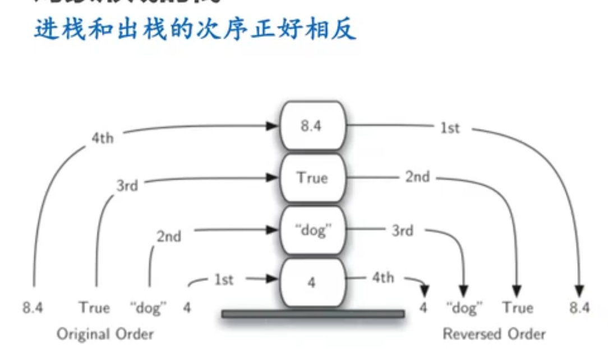
- 现实应用：浏览器的back, word的撤销（undo）操作
- 操作：
- Stack(): 创建新栈
- push(item): 将item加入栈顶，无返回值
- pop(): 将栈顶数据移除，并返回修改后的栈
- peek(): “窥视”栈顶数据项
- isEmpty(): 返回栈是否为空栈
- size(): 返回栈有多少个数据项
class Stack:
def __init__(self):
self.items = []
def push(self, item):
self.items.append(item)
def pop(self):
return self.items.pop()
def peek(self):
return self.items[-1]
def size(self):
return len(self.items)
def isEmpty(self):
return (self.items == [])栈的应用
栈的应用（一）括号匹配

- 思路：从左到右对括号进行堆栈，如果是右括号，则抵消一个左括号；如果最后剩下左括号或者右括号，说明括号不匹配
## 栈的应用：括号匹配（只匹配小括号）
def bracketMatcher(brackets: str) -> bool:
stack = Stack()
for brac in brackets:
if brac == '(':
stack.push(brac)
elif brac == ')':
if stack.isEmpty(): # 一旦右括号落到了栈底，那么匹配失败
return False
stack.pop()
return stack.isEmpty() # 最后看是否剩余左括号来判断是否成功匹配## 栈的应用：复杂括号匹配（可以匹配大中小括号）
def bracketMatcher_v2(brackets: str) -> bool:
stack = Stack()
matches = {'(':')', '[':']', '{':'}'}
for brac in brackets:
if brac in '([{':
stack.push(brac)
elif brac in ')]}':
# 如果右括号不等于上一个堆栈对应的括号，就是错的！
if stack.isEmpty() or matches[stack.peek()] != brac:
return False
stack.pop()
return stack.isEmpty()栈的应用（二）：十进制转二进制
栈的应用（三）：中缀转后缀表达式
波兰表达式（Polish Notation），也称为前缀表达式，是一种数学表达式的表示方法，由波兰数学家扬·卢卡西威茨（Jan Łukasiewicz）在20世纪20年代提出。它的特点是运算符位于操作数之前，因此无需使用括号来表示运算的优先级。
- 无需括号：由于运算符的顺序已经明确了运算的优先级，波兰表达式不需要括号。
- 结构清晰：按运算符及其操作数的个数识别子表达式。
以 (1 + 2) * (3 + 4) 为例：
- 中缀：
(1 + 2) * (3 + 4) - 前缀（波兰表达式）：
* + 1 2 + 3 4 - 运算符在操作数前。每个运算符的操作数个数已知，因此不需要额外括号；也可以用栈来求值。
队列 Queue
队列的概念
原则：先进先出（FIFO）
- 数据项仅添加到尾端（rear）从顶端移除（front）
应用：打印任务、计算机进程、键盘缓冲
Python实现
class Queue:
def __init__(self):
self.items = []
def isEmpty(self):
return self.items == []
def enqueue(self, item):
self.items.insert(0, item) # 复杂度为O(n)
def dequeue(self):
return self.items.pop()
def size(self):
return len(self.items)队列的应用
队列的应用（一）：Josephus问题
据说著名犹太历史学家 Josephus有过以下的故事：在罗马人占领乔塔帕特后，39 个犹太人与Josephus及他的朋友躲到一个洞中，39个犹太人决定宁愿死也不要被敌人抓到，于是决定了一个自杀方式：41个人排成一个圆圈，由第1个人开始报数，每报数到第3人该人就必须自杀，然后再由下一个重新报数，直到所有人都自杀身亡为止。然而Josephus 和他的朋友并不想遵从。首先从一个人开始，越过k-2个人（因为第一个人已经被越过），并杀掉第k个人。接着，再越过k-1个人，并杀掉第k个人。这个过程沿着圆圈一直进行，直到最终只剩下一个人留下，这个人就可以继续活着。问题是一开始要站在什么地方才能避免自杀？Josephus要他的朋友先假装遵从，他将朋友与自己安排在第16个与第31个位置，于是逃过了这场死亡游戏。
def JosephusRing(namelist, num):
q = Queue()
for name in namelist: # 全部入队
q.enqueue(name)
while q.size() > 1:
for _ in range(num -1):
q.enqueue(q.dequeue()) # 队首出队，队尾入队
q.dequeue() # 出队
return q.dequeue()队列的应用（二）：打印机队列建模
class Printer:
def __init__(self, ppm):
self.pagerate = ppm # 初始化打印速度
self.currentTask = None # 打印任务
self.timeRemaining = 0 # 任务倒计时
def tick(self):
if self.currentTask != None:
self.timeRemaining = self.timeRemaining - 1
if self.timeRemaining <= 0:
self.currentTask = None
def busy(self):
if self.currentTask != None:
return True
else:
return False
def startNext(self, newtask):
self.currentTask = newtask
self.timeRemaining = newtask.getPages() * 60 / self.pagerate
class Task:
def __init__(self, time):
self.timestamp = time
self.pages = random.randrange(1, 21)
def getStamp(self):
return self.timestamp
def getPages(self):
return self.pages
def waitTime(self, currentTime):
return currentTime - self.timestamp
def newPrintTask():
num = random.randrange(1, 101)
if num == 100:
return True
else:
return False
def simulation(T, PPM):
printer = Printer(PPM)
printQueue = Queue()
waitingtimes = []
# 时间开始流逝......
for currentSecond in range(T):
# 以一定概率随机生成任务, 并加入队列
if newPrintTask():
task = Task(currentSecond)
printQueue.enqueue(task)
# 将队列任务加入到打印机
if not (printer.busy() or printQueue.isEmpty()):
nexttask = printQueue.dequeue()
waitingtimes.append(nexttask.waitTime(currentSecond))
printer.startNext(nexttask)
# 打印机当前任务-1s
printer.tick()
avg_waiting = sum(waitingtimes)/len(waitingtimes)
return avg_waiting双端队列 Deque
- 既可以从尾端加入移除，也可以从首端加入或移除（同时具备了队列和栈的特性）
- 应用：回文词判定（先将单词加入deque，再从两端同时移除字符并判定是否相同，直到deque中剩0/1个字符 ）
线性表 Linear List
- 线性表是最基础的线性结构，栈和队列是操作受限的线性结构，是线性表的子集。
- 顺序表和链表是线性表的两种实现方式（储存方式）
顺序表
定义：
表中元素顺序存放在一片足够大的连续存储区里，首元素(第一个元素)存入存储区的开始位置，其余元素依次顺序存放。元素之间的逻辑顺序关系通过元素在存储区里的物理位置表示(隐式表示元素间的关系)。

如果每个元素大小相等：直接储存；
如果元素大小不等：在内存中存入链接，通过链接间接访问
顺序表的操作：
- 创建空表：分配一块元素存储，记录表的容量，并将元素计数值设为0.（创建新表的存储区后，应立即将两个表信息记录域(max和num)设置好，保证这个表处于合法状态。）
- 不修改表结构的操作：直接访问O1，查找On
- 加入元素：尾端加入O1，非保序插入O1，保序插入On（因为要逐一下移）
- 删除元素：同理

顺序表的结构

分离式顺序表结构的优点：可以实现扩充容量：
另外申请一个更大的元素储存区
把表中原有的元素复制到新的储存区
改变表对象的元素区链接
实际加入新元素
动态顺序表后端插入技术（考虑尾端插入n个元素的平均复杂度）
线性增长策略 On
倍增策略 O1（付出了空间代价）
Python的List
- list就是一种采用分离式技术实现的动态顺序表。
在Python的官方系统中,list实现采用了如下的实际策略:在建立空表(或者很小的表)时，系统分配一块能容纳8个元素的存储区;在执行插入操作(insent或append等)时，如果元素区满就换一块4倍大的存储区。但如果当时的表已经很大，系统将改变策略，换存储区时容量加倍。这里的“很大”是一个实现确定的参数，目前的值是50000。引入后一个策略是为了避免出现过多空闲的存储位置。如前所述，通过这套技术实现的1ist，尾端加入元素操作的平均时间复杂度是 O(1)。
链表
单链表的结构
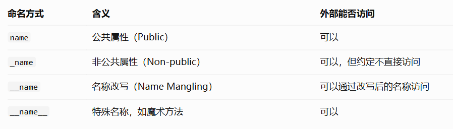
链表的操作：
- 创建空链表：表头指针设置为空
class LNode:
def __init__(self, elem, next_ = None):
self.elem = elem
self.next = next_- 删除链表：丢弃链表的所有节点（在Python中，只需把表头指针设置为None，解释器就会自动收回不用的存储）
- 判断链表是否为空：将表头指针的值与空链接比较
- 插入元素：


# 在首端插入元素
q = LNode(13)
q.next = head.next # 把原链表的表头指针存入新结点的链接域
head = q # 修改表头指针，使之指向新结点
# 在中间/尾端插入元素
q = LNode(13)
q.next = pre.next # 把原结点的next域的值存入新结点的next域
pre.next = q # 让pre的next域指向新结点- 删除元素：
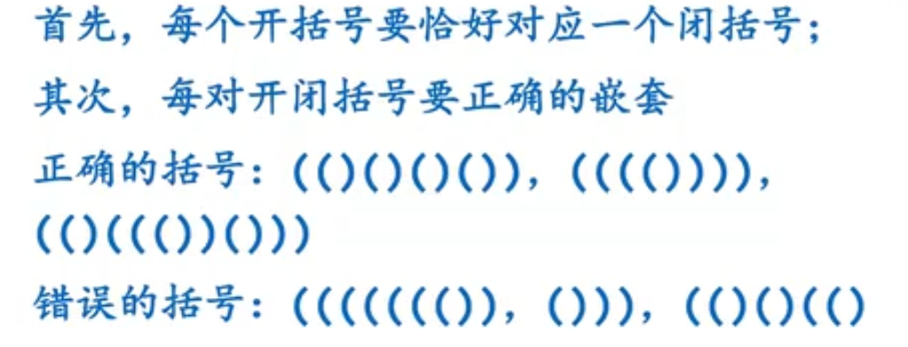
# 删除表首元素 只需要修改表首的指针，使其指向表中第二个结点
head = head.next
# 删除表中任意一个元素
pre.next = pre.next.next- 扫描、定位和遍历
- 链表的反转*
- 链表的排序*
用Python实现一个链表类
链表的变体与类的继承
循环单链表
双链表
基于顺序表和链表的Josephus问题求解
本节待补。
哈希表 (散列表)
哈希表定义
思考：如何将查找的复杂度降到O(1)?
必须要有先验知识
哈希表先用哈希值定位槽位，再按冲突处理规则确认键。散列分布适当且负载受控时，查找的期望时间为 \(O(1)\)；大量碰撞时可能退化到 \(O(n)\)。这里把计算键的哈希值的成本单独计算。
哈希函数把键映射为哈希值；表再将哈希值映射到槽位。例如，可以把字符串按码点或编码字节逐个混合，再对槽位数取模。
好的散列函数需要具备特性
冲突最少（近似完美）
计算难度低（额外开销小）
充分分散数据项（节约空间）
哈希冲突：数组长度有限，不同 key 可能映射到同一个下标。
负载因子：元素个数 / 哈希表容量。装载因子过高，冲突多，性能下降；过低则浪费空间。
完美哈希函数：给定一组数据项， 如果一个散列函数能把每个数据项映射到不同的槽中， 那么这个散列函数就可以称为“完美散列函数。但如果数据项经常性的变动， 很难有一个系统性的方法来设计对应的完美散列函数
哈希函数设计
哈希函数设计的原则：
均匀分布：让输入尽可能打散，避免不同key集中到少数位置
高效计算：避免哈希计算本身成为瓶颈。对长度为 \(L\) 的字符串，首次计算哈希值通常需要读取其中的字符或字节。
稳定性：相同输入要得到相同输出
如果散列函数设计太过复杂， 去花费大量的计算资源计算槽号。可能还不如简单地进行顺序查找或者二分查找
失去了散列本身的意义
常见设计：
数值型：直接取模
字符串型：多项式哈希（s0, s1, sk-1是字符ASCII码）
MD5设计
MD5（Message Digest Algorithm 5）是一种哈希函数，它的作用是把任意长度的输入（比如一段文字、一个文件）压缩成一个128 位（16 字节）的固定长度摘要。常用来做文件校验、签名之类的用途。
理想的 MD5 应该让不同输入几乎不可能得到相同的哈希值。但后来被证明 MD5 已经不安全，可以构造两个不同的文件拥有相同的 MD5（碰撞攻击）。因此现在不推荐在安全场景下用它。
import hashlib
s = "hello world"
md5_value = hashlib.md5(s.encode()).hexdigest()
print(md5_value) # 输出: 5eb63bbbe01eeed093cb22bb8f5acdc3冲突解决
开放寻址法（Open Addressing）(内消解)
思路：数组就一个，冲突了就“往下找空位”。
- 线性探测：一步一步往后挪，直到找到空槽。问题是容易形成“堆积”。
- 二次探测：冲突时往后跳 1², 2², 3² … 个位置，分布更均匀。
- 双重哈希：换个哈希函数重新算位置，避免模式化冲突。
特点：所有元素都存在同一个数组里，节省空间，但删除操作比较麻烦。
链地址法（Chaining）（外消解）
思路：数组每个格子里放的不是单一元素，而是一个链表（或红黑树等结构）。
- 冲突的 key 全部插在该槽的链表中。
- 查找时先定位桶，再在桶里顺序找。
特点：删除简单，扩容开销小，但要多一层内存引用。
其他改进
比如 Cuckoo Hashing（布谷鸟哈希），一个 key 有两个可能的位置，插入时如果位置被占，就“赶走”原来的元素，给它找另一个窝。这样保证查找步数固定，但插入可能会触发较大规模搬迁。
Python语言中的哈希应用
dict 和 set 都通过哈希表实现高效查找。在 CPython 中，两者使用各自的实现。
以dict为例，
底层是 哈希表 + 开放寻址法。
每个元素是一个 key-value 对。
存储时，先对 key 计算哈希值，定位到某个槽位（bucket），如果冲突就用开放寻址往后找空位。
查询时，也是用相同的哈希函数定位，如果槽位的 key 匹配，就直接返回 value。
set 存储不重复的元素，dict 存储键与值的映射；两者都要求用作查找的元素或键可哈希。
python内置的hash函数
hash() 是 Python 的一个内置函数，用来返回对象的哈希值。它的作用其实就是 给对象生成一个整数指纹，便于 dict 、set 这种基于哈希表的容器来存取元素。
Python 容器（dict 、set ）存 key 时，流程是：
先调用 hash(key) 找到桶的位置。
发生冲突时，需要继续探测，并用相等性比较判断候选键是否匹配。
可哈希对象在生命周期内的哈希值不能变化；相等的对象必须有相同的哈希值。list、dict 和 set 不可哈希；按身份比较和散列的自定义对象可以有可变属性。
树与二叉树
树的术语和定义
树的术语
- 节点：它可以有自己的名字，我们称作“键”。节点也可以带有附加信息，我们称作“有效载荷”。
- 子节点：一个节点通过出边与子节点相连。
- 父节点：一个节点是其所有子节点的父节点。
- 兄弟节点：具有同一父节点的节点互称为兄弟节点。
- 叶子结点：叶子节点没有子节点。
- 边：两个节点通过一条边相连，表示它们之间存在关系。除了根节点以外，其他每个节点都仅有一条入边，出边则可能有多条。（根节点是树中唯一没有入边的节点）
- 路径：路径是由边连接的有序节点列表
- 层数：节点n的层数是从根节点到n的唯一路径长度
- 高度：节点层数的最大值
树的定义
- 从节点和边来看，非空树有一个根节点。
- 除根节点外，每个节点都有唯一的父节点。
- 从根到任意节点恰好有一条路径。
- 如果每个节点最多有两个子节点，它就是二叉树。
- 递归地看，树可以为空；非空树由一个根节点及零棵或多棵子树构成，各子树的根通过一条边与父树的根相连。
树的实现
树的遍历
前序遍历
在前序遍历中，先访问根节点，然后递归地前序遍历左子树，最后递归地前序遍历右子树。
中序遍历
在中序遍历中，先递归地中序遍历左子树，然后访问根节点，最后递归地中序遍历右子树。
后序遍历
在后序遍历中，我们先递归地后序遍历访问左子树和右子树，最后访问根节点
def preorder(tree):
"""前序遍历"""
if tree:
print(tree.getRootVal())
preorder(tree.getLeftChild())
preorder(tree.getRightChild())
def postorder(tree):
"""后序遍历"""
if tree != None:
postorder(tree.getLeftChild())
postorder(tree.getRightChild())
print(tree.getRootVal())
def inorder(tree):
"""中序遍历"""
if tree != None:
inorder(tree.getLeftChild())
print(tree.getRootVal())
inorder(tree.getRightChild())优先队列和二叉堆(Binary Heap)
优先队列也是从头部移除元素，不过元素的逻辑顺序是由优先级决定的
实现优先队列需要用到一种数据结构——二叉堆
二叉堆的入队操作和出队操作均可达到O(log n)
逻辑结构上像二叉树，但是使用了非嵌套的列表
二叉堆有两个常见的变体：
- 最小堆（最小的元素一直在队首）
- 最大堆（最大的元素一直在队首）
二叉堆的操作：
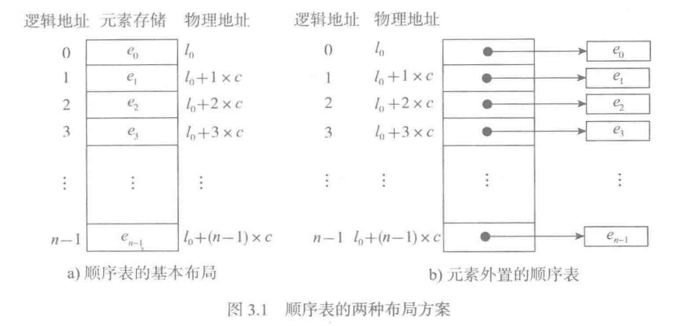
完全二叉树：完全二叉树，叶节点最多只出现在最底层和次底层，而且最底层的叶节点都连续集中在最左边，每个内部节点都有两个子节点， 最多可有1个节点例外
- 下标为p
- 左子节点下标为2p
- 右子节点为2p+1
- 父节点下标为p//2

二叉堆实现
insert(key)方法
新key加在列表末尾，显然无法保持“堆”次序虽然对其它路径的次序没有影响，但对于其到根的路径可能破坏次序
需要将新key沿着路径来“上浮”到其正确位置
注意：新key的“上浮”不会影响其它路径节点的“堆”次序
delMin()方法
移走堆中最小的键，即根节点 heapList[1]。
为了保持“完全二叉树”的性质，只用最后一个节点来代替根节点.
- 将新的根节点沿着一条路径“下沉”，直到比两个子节点都小
- “下沉”路径的选择：如果比子节点大，那么选择较小的子节点交换下沉


buildHeap(lst)方法：从无序表生成“堆”
用insert(key)方法，将无序表中的数据项逐个insert到堆中，但这么做的总代价是O(nlog n)
其实，用“下沉”法，能够将总代价控制在O(n)

class BinHeap:
def __init__(self):
self.heapList = [0] # 0项无用，但为了后面代码可以用到简单的整数乘除法，仍保留它。
self.currentSize = 0
def percUp(self, i):
'''上浮操作'''
while i//2 > 0: # 终止条件：1//2 = 0 也就是当下标回溯到根节点的时候，停止循环
# 子节点和父节点的值比较，如果子节点小于父节点的值，则交换次序
if self.heapList[i] < self.heapList[i//2]:
self.heapList[i], self.heapList[i//2] = self.heapList[i//2], self.heapList[i]
i = i//2
def percDown(self, i):
'''下沉操作'''
def minChild(i):
'''找最小子节点'''
if i*2+1 > self.currentSize: # 如果没有右节点
return i*2
else:
if self.heapList[i*2] < self.heapList[i*2+1]:
return i*2
else:
return i*2+1
while (i*2) <= self.currentSize:
minchild = minChild(i)
# 父节点与其最小的子节点作比较，如果大于，则下沉交换
if self.heapList[i] > self.heapList[minchild]:
self.heapList[i], self.heapList[minchild] = self.heapList[minchild], self.heapList[i]
i = minchild
def insert(self, k):
self.heapList.append(k) # 把数据添加到堆底
self.currentSize += 1
self.percUp(self.currentSize)
def delMin(self):
'''移走整个堆中最小的key:根节点heapList[1]'''
minval = self.heapList[1]
self.heapList[1] = self.heapList[self.currentSize] # 将最后一个堆值替代堆顶值
self.currentSize -= 1
self.heapList.pop() # 移除最后一个堆值
self.percDown(1)
return minval
def buildHeap(self, lst):
'''策略: 从最后一个非叶结点开始下沉，复杂度为O(n)'''
i = len(lst)//2 # 最后一个非叶节点的位置
self.currentSize = len(lst)
self.heapList = [0] + lst[:]
while i > 0:
self.percDown(i)
i -= 1
print(self.heapList)二叉查找树（BST）
二叉搜索树，它是映射的另一种实现，映射抽象数据类型前面两种实现，它们分别是列表二分搜索和散列表。
性质：比父节点小的key都出现在左子树，比父节点大的key都出现在右子树。
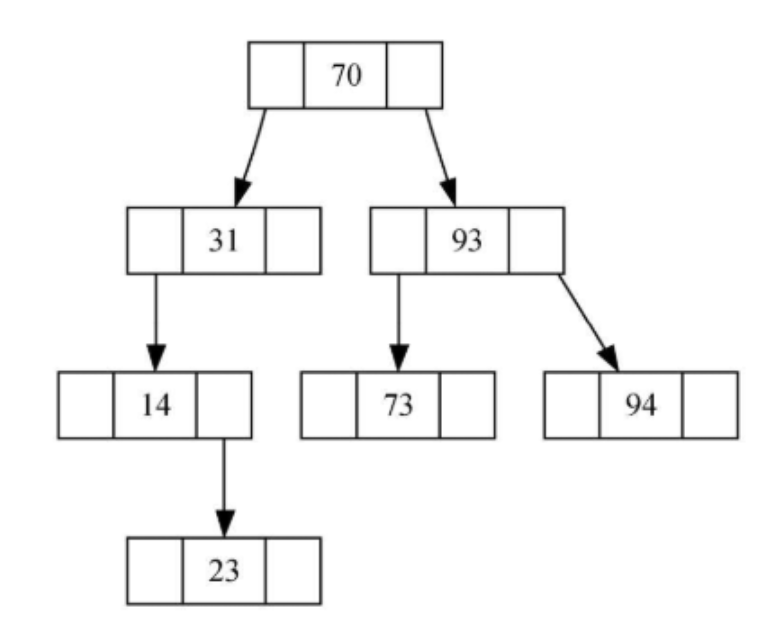
构建思路：
需要用到BST和TreeNode两个类， BST的root成员引用根节点TreeNode
put(key, val)方法：插入key构造BST
首先看BST是否为空，如果一个节点都没有，那么key成为根节点root
否则，就调用一个递归函数_put(key, val,root)来放置key
_put辅助方法
- 键小于当前节点的键时，递归到左子树。
- 若左子树为空，则在左侧创建节点。
- 键大于当前节点的键时，递归到右子树。
- 若右子树为空，则在右侧创建节点。
get(key, val)方法：根据key寻找对应的值
首先判断 BST 是否为空：
如果树根 root 是空的，说明整棵树没有任何节点，直接返回 None。
如果树非空，就调用辅助函数 _get(key, root)，从根节点开始查找。
_get 辅助方法的逻辑：
如果当前节点为空（遍历到尽头了），说明没找到，返回 None。
如果当前节点的 key == 要找的 key，说明命中目标，返回这个节点。
如果 key \< 当前节点的 key，说明目标在左子树，递归去左子树找。
如果 key > 当前节点的 key，说明目标在右子树，递归去右子树找。
get 收到 _get 的返回结果：
如果 _get 返回节点对象，就取出并返回它的 payload（节点存放的值）。
如果 _get 返回 None，说明树中没有这个 key，返回 None。
删除操作比较复杂，这里不做讨论
class BST:
def __init__(self):
# 初始化二叉搜索树
# root 指向根节点
# size 记录树中节点数量
self.root = None
self.size = 0
def put(self, key, val):
"""
插入操作：根据 key 把 (key, val) 插入到 BST 中
如果 key 已存在，则覆盖原有值
"""
if self.root:
# 树已存在根节点 -> 调用递归辅助方法插入
self._put(key, val, self.root)
else:
# 空树 -> 新建根节点
self.root = TreeNode(key, val)
self.size += 1 # 别忘了根节点也要计数
def _put(self, key, val, currentNode):
"""
递归辅助方法：从 currentNode 开始，根据 key 大小选择插入到左/右子树
"""
if key < currentNode.key:
# 如果 key 更小 -> 去左子树
if currentNode.hasLeftChild():
# 左子树存在 -> 递归继续插
self._put(key, val, currentNode.leftChild)
else:
# 左子树不存在 -> 新建节点放这里
currentNode.leftChild = TreeNode(key, val, parent=currentNode)
self.size += 1
elif key > currentNode.key:
# 如果 key 更大 -> 去右子树
if currentNode.hasRightChild():
# 右子树存在 -> 递归继续插
self._put(key, val, currentNode.rightChild)
else:
# 右子树不存在 -> 新建节点放这里
currentNode.rightChild = TreeNode(key, val, parent=currentNode)
self.size += 1
else:
# 如果 key 相等 -> 覆盖当前节点的数据
currentNode.payload = val
return
def get(self, key):
"""
查找操作：根据 key 在 BST 中查找值
如果找到返回 payload，否则返回 None
"""
if self.root:
res = self._get(key, self.root)
if res is not None: # 找到节点
return res.payload
else:
return None
else:
return None
def _get(self, key, currentNode):
"""
递归辅助方法：从 currentNode 开始查找 key
"""
if not currentNode:
# 遍历到空节点 -> 没找到
return None
elif currentNode.key == key:
# 命中目标
return currentNode
elif key < currentNode.key:
# key 更小 -> 去左子树查找
return self._get(key, currentNode.leftChild)
else:
# key 更大 -> 去右子树查找
return self._get(key, currentNode.rightChild)BST 的形态取决于插入顺序。对比 [10, 20, 30, 40, 50] 和 [10, 30, 50, 20, 40]：
10
\
20
\
30
\
40
\
50
# 完全退化成链表
10
\
30
/ \
20 50
/
40
# 稍微平衡一些平衡二叉查找树（AVL）
本节待补。
图论
图的术语
- 图：Graph
- 顶点：Vertex，顶点具有名称标识Key，也可以携带数据项payload
- 边：Edge；边连接两个顶点，可以是有向的，也可以是无向的
- 权重：Weight；表达一个顶点到另一个顶点的代价
一个图可以用 \(G=(V,E)\) 表示，其中 \(V\) 是顶点集合，\(E\) 是边集合。

- 路径：Path，由边依次连接起来的顶点序列；
- 无权路径的长度为边的数量
- 带权路径的长度为所有边权重的和
- 圈：Cycle，首尾顶点相同的路径
如果有向图中不存在任何圈，则称作：有向无圈图（Directed Acyclic Graph, DAG）。DAG有很好的性质，可以用算法去解决。
图的实现
抽象数据类型：ADT Graph 两种实现方式
邻接矩阵（adjacency matrix）
- 实现简单。
- 边很少时，矩阵仍需存储所有顶点对，占用较多空间。

邻接表（adjacency list）

class Vertex:
def __init__(self, key):
self.id = key
self.connectedTo = {}
def addNeighbor(self, nbr, weight=0):
self.connectedTo[nbr] = weight
def __str__(self):
return f"{self.id} connected to {[x.id for x in self.connectedTo]}"
def getConnections(self):
return self.connectedTo.keys()
def getId(self):
return self.id
def getWeight(self, nbr):
return self.connectedTo[nbr]
class Graph:
def __init__(self):
self.vertList = {}
self.numVertices = 0
def addVertex(self, key):
if key not in self.vertList:
self.vertList[key] = Vertex(key)
self.numVertices += 1
return self.vertList[key]
def addEdge(self, f, t, weight=0):
start, end = self.addVertex(f), self.addVertex(t)
start.addNeighbor(end, weight)
def getVertex(self, key):
return self.vertList.get(key)
def getVertices(self):
return self.vertList.keys()
def __contains__(self, key):
return key in self.vertList
def __iter__(self):
return iter(self.vertList.values())算法篇
数据结构与算法绪论
图灵机
图灵机（Turing Machine）是由阿兰·图灵在1936年提出的一个理论模型，它不是现实中的机器，而是用来研究“计算”这个概念的数学工具。你可以把它想象成一个无限长的纸带+一个会动的读写头+一套规则的组合。
- 定义了算法的边界：图灵机告诉我们，有些问题根本没法算，比如停机问题（判断任何一个程序在任意一个输入情况下是否能停机）——你不能写个通用程序判断另一个程序会不会停。
- 奠定了现代计算机科学的基础：现在的计算机，其实就是“图灵完备”的机器，能模拟图灵机干的所有事。
- 统一了计算模型：各种编程语言、算法模型，说白了都逃不出图灵机的范畴。
抽象与实现
抽象是你想做什么， 实现是你怎么做这事。
print("hello") （抽象）：
- Python解释器调用 C 的打印函数
- C 函数再调系统调用（syscall）
- 系统调用再写入终端缓冲区
- 显卡把字画到屏幕上（实现）
利用抽象可以保持问题的整体感，而不是陷入过多的细节中
程序与算法
程序 = 算法 + 实现 + 语法糖 + 和计算机打交道的细节
Apple经典"goto fail" BUG
if ((err = SSLHashSHA1.update(&hashCtx, &serverRandom)) != 0)
goto fail;
if ((err = SSLHashSHA1.update(&hashCtx, &signedParams)) != 0)
goto fail;
goto fail; // ←←← 罪魁祸首
if ((err = SSLHashSHA1.final(&hashCtx, &hashOut)) != 0)
goto fail;第二个 goto fail; 多缩进了一层，变成了无条件执行，不管前面有没有出错，直接跳出函数！也就
这里的关键是：SSLHashSHA1.final() 根本没有执行。
算法复杂性
评价算法的好坏，与程序、运行时段、运行硬件都无关。
大O表示法（Big-O Notation）是用来描述算法“执行时间”或“空间消耗”随输入规模增长的上限。

如上图所示，算法复杂度为O(n\^2)

第一个算法：变位词
逐字检查
等长字符串的逐字查找最坏需要 \(O(n^2)\) 次比较。
# 算法一：逐字检查
def anagramSolution(str_or, str_ch):
find_lis = []
OK = False
list_ch = list(str_ch)
for lor in str_or:
find = False
for pos, lch in enumerate(list_ch):
if lor == lch:
find = True
list_ch[pos] = None
break
else:
continue
find_lis.append(find)
if all(find_lis):
OK = True
return OK先排序后检查
把两个字符串排序后比较；排序主导时间，最坏为 \(O(n\log n)\)。
# 算法二：先排序后检查
def sortSolution(str_or, str_ch):
find_lis = []
OK = False
list_or = list(str_or)
list_ch = list(str_ch)
list_or.sort()
list_ch.sort()
for i in range(len(list_or)):
find = False
if list_or[i] == list_ch[i]:
find = True
find_lis.append(find)
if all(find_lis):
OK = True
return OK计数器算法
分别统计字符出现次数再比较。对固定大小的字母表，时间为 \(O(n)\)。
# 算法三：计数器
def counterSolution(str_or, str_ch):
OK = False
counter_or = [0]*26
counter_ch = [0]*26
for i in range(len(str_or)):
pos_or = ord(str_or[i]) - ord('a')
pos_ch = ord(str_ch[i]) - ord('a')
counter_or[pos_or] += 1
counter_ch[pos_ch] += 1
if counter_ch == counter_or:
OK = True
return OKPython内置数据结构的算法复杂度
列表

- pop(i) 在从中部移除元素后，要把移除元素后面的元素全部向前挪位复制一遍。这个操作可以保证列表按索引取值和按索引复制的操作达到O（1）
- 四种生成前n个整数列表的方法：
def test1(): # 最慢
lis = []
for i in range(1000):
lis = lis + [i]
def test2(): # 较慢
lis = []
for i in range(1000):
lis.append(i)
def test3(): # 次快
lis = [i for i in range(1000)]
def test4(): # 最快
lis = list(range(1000))字典

list[i]按位置取元素通常为 \(O(1)\)；x in list逐项比较，最坏为 \(O(n)\)。x in dict检查键，散列分布适当时的期望时间为 \(O(1)\)。
递归与动态规划
递归问题特点与三定律
递归三定律
递归算法必须有一个基本结束条件（最小规模问题的直接解决）
递归算法必须能改变状态向基本结束条件演进（减小问题规模）
递归算法必须调用自身（解决减小了规模的相同问题）
简单的例子：用递归的方式求数列的和
def listSum(numList):
if not numList:
return 0
return numList[0] + listSum(numList[1:])递归与栈
当一个函数被调用时，系统会把调用时的现场数据（栈帧）压入到系统调用栈。

递归深度与栈溢出：Python默认的递归最大深度为1000，如果超出，就会报错：RecursionError
任何一个递归程序，都可以通过引入一个栈保存中间结果的方式，翻译为一个非递归过程。
- 考虑如下的阶乘函数
def fact(n):
if n < 0:
raise ValueError("n 必须是非负整数")
if n == 0:
return 1
return n * fact(n - 1)
def norec_fact(n):
if n < 0:
raise ValueError("n 必须是非负整数")
res = 1
st = Stack()
# 显式保存待乘因子，模拟递归调用与回溯。
while n > 0:
st.push(n)
n -= 1
while not st.isEmpty():
res *= st.pop()
return res递归的应用
递归的应用（一）: 任意进制转换（也可以翻译为用栈实现）
def toStr(n, base):
convertString = "0123456789ABCDEF"
if n < base:
return convertString[n] # 最小规模
return toStr(n//base, base) + convertString[n%base]递归的应用（二）: 分型
- 螺旋
import turtle
t = turtle.Turtle()
def Spiral(t, linelen):
if linelen > 0:
t.forward(linelen)
t.right(90)
Spiral(t, linelen - 5)
Spiral(t, 100)
turtle.done()- 分形树
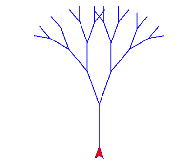
def tree(branch_len):
if branch_len > 5:
t.forward(branch_len) # 画树干
t.right(20) # 右转20度
tree(branch_len - 15)
t.left(40)
tree(branch_len - 15)
t.right(20)
t.backward(branch_len)
- 谢尔宾斯基三角形

伪代码：
points = {
'left': (-200, 0),
'right': (200, 0),
'top':(0, 100)
}
def Sierpinski(degree, points):
drawTriangle(points)
if degree > 0:
# 绘制左侧三角形
Sierpinski(degree - 1, {
'left': points['left'],
'top': getMid(points['left'], points['top']),
'right':getMid(points['left'], points['right'])
}
)
# 绘制上面的三角形(同理)
# 绘制右边的三角形递归的应用（三）: 汉诺塔
HanoiTower（汉诺塔）问题最早是 1883 年由法国数学家 Édouard Lucas 提出来的一个数学谜题。Lucas 设计了一个益智玩具，叫 Tour d'Hanoï（河内之塔，后来翻译成“汉诺塔”）。
传说背景是这样的：在印度的某座寺庙里，有三根金刚柱，柱子上有 64 个大小不一的金盘，从下到上由大到小整齐堆叠。僧侣们日夜不停地按规则搬动这些盘子，要把它们从第一根柱子全部移到第三根。传说中当他们完成最后一次移动时，世界就会毁灭。
有三根柱子（通常叫 A、B、C），在柱子 A 上从大到小叠放着若干圆盘（大盘在下，小盘在上）。任务是：把所有圆盘从 A 移到 C，规则是：
一次只能移动一个圆盘；
任何时候都不能把大盘放在小盘上面；
可以借助中间的柱子（B）。
当然，这只是 Lucas 编的一个故事，用来给谜题增加神秘感。实际上 64 个盘子移动完需要的步数是264−12\^{64} - 1264−1，大约 1.8 × 10\^19 步，就算一秒搬一次，也要几百亿年，比宇宙年龄还长，所以“世界末日”完全就是噱头。
基本思路：把除了最大片以外的一坨看成一个整体，把任务分成三步

def moveTower(height, fromPole, withPole, toPole):
if height >= 1:
moveTower(height - 1, fromPole, toPole, withPole)
moveDisk(height, fromPole, toPole)
moveTower(height - 1, withPole, fromPole, toPole)
def moveDisk(disk, fromPole, toPole):
print(f"Moving Disk[{disk}] from {fromPole} to {toPole}")另一种写法：初学者应先明确最小问题（剩一个盘子，直接搬过去）
if height == 1:
moveDisk(1, fromPole, toPole) # 最小问题，直接搬
else:
# 先把 n-1 个搬到辅助柱子
# 再把最大的一个搬到目标柱子
# 再把 n-1 个从辅助柱子搬到目标柱子
pass # 此处仅列出递归步骤
递归的应用（四）: 迷宫问题
基本思路：（去找最小问题）
- 向东、南、西、北四个方向尝试。
- 找到出口：返回
True，并把成功路径标记出来。 - 四个方向都走不通：把当前格标记为死路，返回
False并回溯。墙、已尝试的格子和死路都不再进入。
- 找到出口：返回
def searchMaze(maze, startRow, startColumn):
# 假定迷宫边界封闭；无围墙时先检查行列坐标是否有效。
if maze[startRow][startColumn] in (WALL, DEADEND, TRIED):
return False
if maze.isExit(startRow, startColumn):
maze.updatePosition(startRow, startColumn, PARTOFPATH)
return True
# 递归前先标记，避免沿原路返回时反复访问当前格。
maze.updatePosition(startRow, startColumn, TRIED)
found = (
searchMaze(maze, startRow - 1, startColumn)
or searchMaze(maze, startRow + 1, startColumn)
or searchMaze(maze, startRow, startColumn - 1)
or searchMaze(maze, startRow, startColumn + 1)
)
maze.updatePosition(startRow, startColumn, PARTOFPATH if found else DEADEND)
return found优化问题和贪心策略
贪心策略：每一步都选择当前看来最优的选择，希望通过这种“局部最优”一步步推进，最后得到整体的最优解。
硬币找零问题：
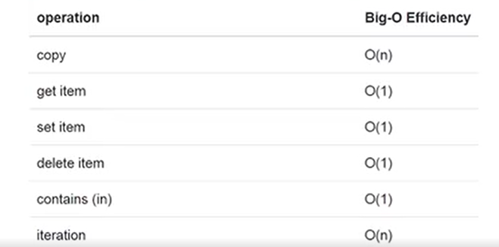
但是如果该国货币存在面值21，贪心策略就会失效：

引入：找零问题的递归解法：

def recMC(facevalues, amount):
if amount == 0:
return 0
best = float("inf")
for face in facevalues:
if 0 < face <= amount:
best = min(best, 1 + recMC(facevalues, amount - face))
return best # 无法正好找零时返回无穷大
如何解决？-> 用一个“记忆器”将计算过的结果保存下来，在计算之前查表看看是否已经计算过
def recDC(facevalues, amount, knownresult):
if amount == 0:
return 0
if knownresult[amount] is not None:
return knownresult[amount]
best = float("inf")
for face in facevalues:
if 0 < face <= amount:
best = min(best, 1 + recDC(facevalues, amount - face, knownresult))
knownresult[amount] = best
return best
memo = [None] * 64
recDC([1, 5, 10, 25], 63, memo)这里使用自顶向下的动态规划：保留递归写法，把算过的子问题存入记忆表。下面用自底向上填表得到相同的结果。
动态规划
在解决一个复杂问题时，如果这个问题可以分解成若干个 重叠子问题，并且问题的最优解可以通过 子问题的最优解组合 得到，那么就可以用动态规划来高效求解。
它和“分治”的区别是：分治子问题彼此独立，而动态规划的子问题会反复出现，所以需要“记忆化”来避免重复计算。
找零问题的动态规划解法：

从头遍历，每到一个金额就看这个金额对应的“上一个状态”（例如11元，查1加10， 查6加5， 查10加1）
def DPMakeChange(facelist, change, mincoins):
mincoins[0] = 0
for subchange in range(1, change + 1):
counts = float("inf")
# 当前金额只能使用不超过它的正面额。
for face in facelist:
if 0 < face <= subchange:
counts = min(counts, mincoins[subchange - face] + 1)
mincoins[subchange] = counts
return mincoins[change]
DPMakeChange([1, 5, 10, 21, 25], 63, [0] * 64) # 3 枚 21背包问题（博物馆大盗）：
博物馆里有 \(n\) 件宝物，第 \(i\) 件的重量为 \(w_i\)、价值为 \(v_i\)。
一个容量为 W 的背包，能装的重量有限。现在问题是：他怎样选择宝物装进背包，才能让总价值最大？
限制条件：
- 每件宝物只能拿或者不拿（0/1 背包），不能切割。
- 装进去的总重量不能超过背包容量 W。
目标是最大化价值

i 表示考虑前 i 个宝物
w 表示当前背包容量上限为 w
m[(i, w)] 表示在这两个条件下能取得的 最大价值
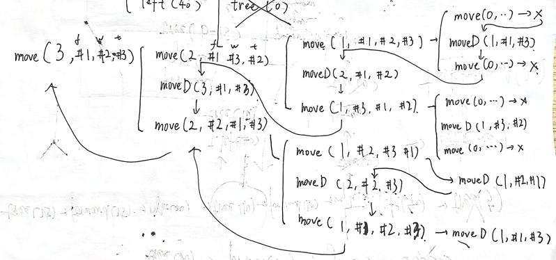
tr = [None, {'w': ..., 'v': ...}, ...]
max_w = 20 # 大盗的最大承重
m = {(i, w): 0 for i in range(len(tr)) for w in range(max_w+1)} # 这里用了一个字典来当作二维 DP 表
for i in range(1, len(tr)):
for w in range(1, max_w + 1):
# 前i件的重量大于w, 装不下第i件宝物
if tr[i]['w'] > w:
m[(i, w)] = m[(i - 1, w)]
else:
# 不装第i件和装第i件取一个最大值
m[(i, w)] = max(
m[(i-1, w)],
m[(i-1, w - tr[i]['w'])] + tr[i]['v'] # 从容量中减去第i件的重量，加上它的价值
)这个问题用递归+记忆化去解：
from functools import lru_cache
tr = [(2, 3), (3, 4), (4, 8), (5, 8), (9, 10)]
def Bag(tr, w):
@lru_cache(maxsize=None)
def best(i, remaining):
if i == len(tr) or remaining == 0:
return 0
weight, value = tr[i]
# 缓存用物品位置；即使两件物品重量、价值相同，也能分别选择。
vmax = best(i + 1, remaining)
if weight <= remaining:
vmax = max(vmax, value + best(i + 1, remaining - weight))
return vmax
return best(0, w)
Bag(tr, 20)排序
排序算法的分类
是否基于比较
- 基于比较：冒泡、插入、选择、希尔、归并、快速、堆排序等。一般比较排序的最坏情况比较次数下界为 \(\Omega(n \log n)\)。
- 非比较：计数排序为 \(O(n+k)\)，其中 \(k\) 是取值范围大小；桶排序和基数排序的成本分别取决于输入分布及分桶方式、位数与基数。
就地排序（in-place） vs 需要额外空间
- 冒泡、插入、选择、希尔、堆排序，以及使用原地分区的快排可直接在原数组上操作。快排仍需递归栈；列表推导式的快排还会创建额外列表。
- 需要额外空间：归并、计数、桶、基数
稳定性（相等元素相对顺序是否保留）
- 冒泡、插入、归并，以及恰当实现的计数、桶、基数排序可以做到稳定。
- 不稳定：选择、希尔、快排、堆排序
冒泡排序
最坏时间复杂度为 \(O(n^2)\)；若一轮没有交换即可提前停止，最优为 \(O(n)\)。
核心思想：通过一轮两两交换的循环，每一轮会把最大的元素“冒”到末尾
def bubbleSort(arr):
n = len(arr)
for i in range(n-1): # 外层用于控制循环的趟数
swap = False
for j in range(n-1-i):
if arr[j] > arr[j+1]:
arr[j], arr[j+1] = arr[j+1], arr[j] # 逐个比较,如果前面的值大于后面的值,就交换次序
swap = True
# 如果没有发生交换,说明排序完成
if not swap:
break
return arr选择排序
即使输入已有序，也要扫描未排序部分寻找最小值，比较次数为 \(\Theta(n^2)\)。
核心思想：每一次循环，直接确定好最小值的Index，一步交换到位
def selectionSort(arr):
n = len(arr)
for i in range(n-1):
min_idx = i
for j in range(i+1, n):
if arr[j] < arr[min_idx]:
min_idx = j
# 一趟之后，直接交换到位
arr[i], arr[min_idx] = arr[min_idx], arr[i]
return arr选择排序是不稳定的
2\ 2 2\ 1 （交换）
1 2 2\ 2\（几个2的相对位置发生了改变）
插入排序
最坏时间复杂度为 \(O(n^2)\)；输入已有序时为 \(O(n)\)。
核心思想：把数组分成“已排序部分”和“未排序部分”，每次从未排序部分取一个元素，插入到已排序部分的正确位置。（像是码扑克牌一样）
def insertionSort(arr):
n = len(arr)
for i in range(1, n): # 从第二个元素开始
key = arr[i]
j = i # 让j指向当前的位置
while j >= 1 and arr[j - 1] > key: # 把这个key之前的比他大的元素往后挪一格
arr[j] = arr[j - 1]
j -= 1
arr[j] = key # 一轮腾完位置之后，将key插入到正确的位置
return arr选择排序是稳定的
插入排序的优势是当数据基本有序时非常快，因为它移动元素的次数少
希尔排序
核心思想：先让相隔较远的元素先部分有序，再逐步缩小间隔，最后用插入排序收尾。（既然插入排序在数据是基本有序的时候非常快，就让他先变成基本有序）
选一个 gap（步长），把数组分成 gap 个子序列
在每个子序列中做插入排序
缩小 gap，重复步骤 2，直到 gap=1（最后一次就是普通插入排序）
def shell_sort(arr):
n = len(arr) # 数组长度
gap = n // 2 # 初始步长：n的一半（典型的希尔序列）
while gap > 0: # 步长逐步缩小直到1
for i in range(gap, n): # 从第gap个元素开始，对每个“子序列”做插入排序
key = arr[i] # 要插入的值（插入排序的key）
j = i
# ——“按gap间隔”的插入排序——
while j >= gap and arr[j - gap] > key:
arr[j] = arr[j - gap] # 腾位置：把前gap位置的元素后移gap
j -= gap # 指针跨gap向前继续比较
arr[j] = key # 真正插入：把key放到空出来的位置
gap //= 2 # 步长折半
return arr快速排序
分区大致平衡时为 \(O(n\log n)\)；若总选到极端值，最坏为 \(O(n^2)\)。
核心思想：选 pivot（基准值）。分区：把比 pivot 小的放左边，比 pivot 大的放右边（等于的放任意一边）。
简单方法：用Python的列表推导式，需要额外的空间
def quick_sort(arr):
if len(arr) <= 1: # 递归结束条件
return arr
pivot = arr[len(arr) // 2] # 取中间元素做 pivot
left = [x for x in arr if x < pivot]
middle = [x for x in arr if x == pivot]
right = [x for x in arr if x > pivot]
return quick_sort(left) + middle + quick_sort(right)Lomuto划分快排：
选数组的最后一个元素作为 pivot（基准值）。
用两个指针：
i：指向“已处理的、小于 pivot 区域”的最后一个位置j：扫描指针，从头到尾（除了 pivot 本身）遍历
遍历时，如果 arr[j] < pivot ，就把 i 向右挪一格，并交换 arr[i] 和 arr[j] 。
遍历完后，将基准值与 arr[i + 1] 交换。基准值左侧严格小于它，右侧大于或等于它。
指针i用于确定pivot最终被置放的位置，指针j用于扫描
def lomutoPartition(arr, low, high):
pivot = arr[high]
i = low - 1
# 小于基准值的元素移到左侧，未处理元素由 j 扫描。
for j in range(low, high):
if arr[j] < pivot:
i += 1
arr[i], arr[j] = arr[j], arr[i]
arr[i + 1], arr[high] = arr[high], arr[i + 1]
return i + 1
def quick_sort_lomuto(arr, low, high):
if low < high:
pi = lomutoPartition(arr, low, high)
quick_sort_lomuto(arr, low, pi - 1)
quick_sort_lomuto(arr, pi + 1, high)Hoare划分快排：
def hoarePartition(arr, low, high):
pivot = arr[low]
i, j = low - 1, high + 1
while True:
# 两个游标遇到等于基准值的元素都停止，避免重复值时越界。
i += 1
while arr[i] < pivot:
i += 1
j -= 1
while arr[j] > pivot:
j -= 1
if i >= j:
return j
arr[i], arr[j] = arr[j], arr[i]
def quick_sort_hoare(arr, low, high):
if low < high:
pi = hoarePartition(arr, low, high)
quick_sort_hoare(arr, low, pi)
quick_sort_hoare(arr, pi + 1, high)使用 Lomuto 或 Hoare 原地分区的常见快速排序实现都不稳定。
归并排序
核心思想：“分而治之”

分：不断把牌一分为二，直到每一堆只剩下一张牌（自然有序）。
治：然后再一对一对地把小堆合并成大堆，合并时保持有序。
def mergeSort(arr):
if len(arr) <= 1:
return arr
mid = len(arr) // 2
left = merge_sort(arr[:mid])
right = merge_sort(arr[mid:])
return merge(left, right)
def merge(left, right):
result = []
i = j = 0
while i < len(left) and j < len(right):
if left[i] <= right[j]:
result.append(left[i])
i += 1
else:
result.append(right[j])
j += 1
# 把剩下的接上
result.extend(left[i:])
result.extend(left[j:])堆排序
本节待补。
图的遍历与带权图算法
广度优先算法 BFS
词梯问题（Word Ladder）
要求是相邻两个单词之间差异只能是1个字母，如FOOL变SAGE：
FOOL >> POOL >> POLL >> POLE >> PALE>> SALE >> SAGE
目标是找到最短的单词变换序列
- 用图表示单词之间的关系；
- 用一种名为广度优先搜索
BFS的图算法找到从起始单词到结束单词的最短路径。

- 首先是将所有单词作为顶点加入图中，再设法建立顶点之间的边，对每个顶点， 与其它所有单词进行比较， 如果相差仅1个字母， 则建立一条边
- 时间复杂度是O(n²)，对于所有4个字母的5110个单词，需要超过2600万次比较！
- 改进的算法是创建大量的桶， 每个桶可以存放若干单词，桶标记是去掉1个字母，通配符“_”占空的单词（词梯图是一个非常稀疏的图）

def buildWordGraph(wordFile):
d = {}
graph = Graph()
# 建立桶
with open(wordFile, 'r') as w:
for line in w:
word = line.rstrip("\r\n")
for i in range(len(word)):
bucket = word[:i] + '_' + word[i+1:] # 建立一个缺省一个字母的桶
if bucket in d:
d[bucket].append(word)
else:
d[bucket] = [word]
# 为每一个桶中的单词添加结点和边
for bucket in d.keys():
for word1 in d[bucket]:
for word2 in d[bucket]:
if word1 != word2:
graph.addEdge(word1, word2)
return graphBFS的实现方法
从起始顶点s开始， 作为刚发现的顶点，标注为灰色， 距离为0， 前驱为None（为顶点新添加的属性），加入队列， 接下来是个循环迭代过程：
- 从队首取出一个顶点作为当前顶点。
- 遍历它的邻接顶点。
- 对尚未发现的顶点，标记为灰色，距离设为当前顶点距离加 1，前驱设为当前顶点，再入队。
- 将当前顶点标记为已探索，继续处理队列。
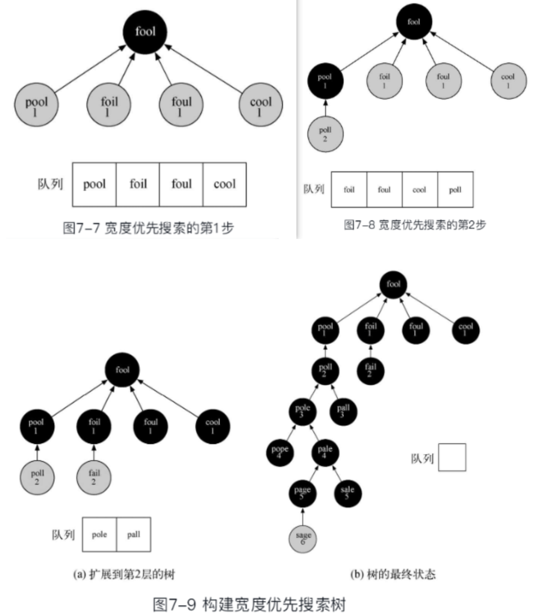
def BFS(graph, start):
start.setDistance(0) # 初始距离为0
start.setPred(None) # 初始前驱为None
vertexQueue = Queue()
vertexQueue.enqueue(start) # 第一个单词入列
while(vertexQueue.size > 0):
currentVertex = vertexQueue.dequeue() # 在搜索过程中，从队列的首端取出一个单词
for nbr in currentVertex.getConnections():
if (nbr.setColor() == 'white'): # 如果该顶点未被探索
nbr.setColor('grey') # 标记为探索
nbr.setDistance(currentVertex.getDistance()+1) # 距离+1
nbr.setPred(currentVertex) # 设置前驱
vertexQueue.enqueue(nbr) # 入队
currentVertex.setColor('black') # 探索完成后，将结点设置为黑色
# 回溯
def traverse(y):
x = y
while (x.getPred()):
print(x.getId())
x = x.getPred()
print(x.getId())
wordgraph = buildWordGraph('xxx.txt')
BFS(wordgraph, wordgraph.getVertex('FOOL'))
traverse(wordgraph.getVertex('SAGE'))BFS算法主体是两个循环的嵌套
- while循环对每个顶点访问一次，所以是O(|V|)
- 而嵌套在while中的for，由于每条边只有在其起始顶点u出队的时候才会被检查一次
- 而每个顶点最多出队1次，所以边最多被检查1次，一共是O(|E|)
- 综合起来BFS的时间复杂度为O(|V|+|E|)
词梯问题还包括两个部分算法
- 建立BFS树之后， 回溯顶点到起始顶点的过程，最多为O(|V|)
- 创建单词关系图也需要时间，最多为O(|V|2)
深度优先算法 DFS
骑士周游问题
在一个国际象棋棋盘上， 一个棋子“马”（骑士） ， 按照“马走日”的规则， 从一个格子出发， 要走遍所有棋盘格恰好一次。把一个这样的走棋序列称为一次“周游”
构建骑士周游图
将棋盘上每一个格表示为一个顶点，同时将骑士每一次合理走法表示为一条边：

# 合法走棋位置函数
def genLegalMove(x, y, bdSize):
# 定义一个检测边界的函数
def legalCoord(x, bdSize):
if x >= 0 and x < bdSize:
return True
else:
return False
newMove = []
moveOffsets = [
(-1, -2), (-1, 2), (-2, -1), (-2, 1),
(1, -2), (1, 2), (2, -1), (2, 1)
]
for i in moveOffsets:
newX = x+i[0]
newY = y+i[1]
if legalCoord(newX, bdSize) and legalCoord(newY, bdSize):
newMove.append((newX, newY))
return newMove构建走棋关系图（每一个坐标都要与其下一步合法移动进行连接）
def knightGraph(bdSize):
# 坐标到结点的映射
def posToNodeId(row, col, bdSize):
return row*bdSize + col
ktGraph = Graph()
for row in range(bdSize):
for col in range(bdSize):
# 把当前的node和下一步的位置进行全连接
nodeId = posToNodeId(row, col, bdSize)
newPosition = genLegalMove(row, col, bdSize)
for e in newPosition:
nid = posToNodeId(e[0], e[1], bdSize)
ktGraph.addEdge(nodeId, nid)
return ktGraph
骑士周游算法实现
用于解决骑士周游问题的图搜索算法是深度优先搜索（Depth First Search,简称DFS）
- 相比前述的广度优先搜索， 其逐层建立搜索树的特点
- 深度优先搜索是沿着树的单支尽量深入向下搜索
如果到无法继续的程度还未找到问题解就回溯上一层再搜索下一支
- DFS的两个实现算法
- 一个DFS算法用于解决骑士周游问题，其特点是每个顶点仅访问一次
- 另一个DFS算法更为通用，允许顶点被重复访问，可作为其它图算法的基础

- 核心算法
- 如果沿着单支深入搜索到无法继续（所有合法移动都已经被走过了）时路径长度还没有达到预定值（8×8棋盘为63）；那么就清除颜色标记，返回到上一层换一个分支继续深入搜索
- 引入一个栈来记录路径并实施返回上一层的回溯操作
def knightTour(n, path, u, limit):
'''
n: 层次
path: 路径
u: 当前顶点
limit: 搜索总深度
'''
u.setColor('gray')
path.append(u) # 此处的path起到一个栈的作用
if n < limit:
# 对所有合法移动路径逐一深入
nbrList = list(u.getConnections())
i = 0
done = False
# 对当前结点下的所有后继结点进行深入
while i < len(nbrList) and not done:
if nbrList[i].getColor() == 'white': # 选择未经过的结点进行探索
done = knightTour(n+1, path, nbrList[i], limit) # 层次+1，递归深入
i += 1
# 如果当前节点下无法深入，则回溯到上一个节点,,将当前结点标记为未探索
if not done:
path.pop()
u.setColor('white')
# 如果某一只的结果达到了设定的最大深度，将done设置为True，一步一步向前回溯
else:
done = True
return done上述算法的性能高度依赖于棋盘大小：
- 就5×5棋盘，约1.5秒可以得到一个周游路径
- 但8×8棋盘，则要半个小时以上才能得到一个解
若搜索深度最多为 \(n\)（棋盘格数），每层分支数最多为 \(k\) 且 \(k>1\)，朴素回溯的搜索规模上界为 \(O(k^n)\)。启发式可以减少实际搜索量，但不改变这个粗略上界。

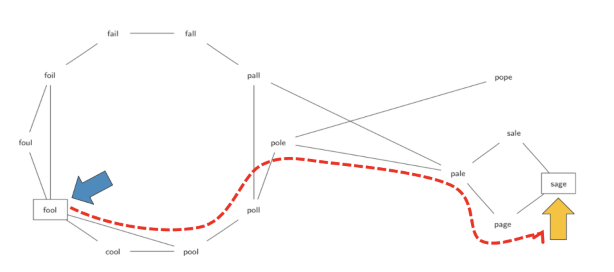
对骑士周游算法的改进：仅仅修改了一下nbrList的遍历顺序，让具有最少合法移动目标的格子优先进行搜索，就让8*8棋盘的搜索时间降低到了秒级
def orderByAvail(u):
resList = []
for v in u.getConnections():
if v.getColor() == 'white': # 选择未被探索过的结点
c = 0 # 以c记录该节点的
for w in v.getConnections():
if w.getColor() == 'white':
c+=1
resList.append((c, v))
resList.sort(key=lambda x: x[0]) # 按照c的个数进行排序
sortedList = [y[1] for y in resList] # 小的先遍历启发式规则Heuristic
- 采用先验的知识改进算法性能
- 启发式规则经常用于人工智能领域；
- 可以有效地减小搜索范围、更快达到目标等等；
- 如棋类程序算法，会预先存入棋谱、布阵口诀、高手习惯等“启发式规则”，能够在最短时间内从海量的棋局落子点搜索树中定位最佳落子。例如：黑白棋中的“金角银边”口诀，指导程序优先占边角位置等等
通用DFS算法
骑士周游算法是一种特殊的DFS算法，它建立了一个没有分支的最深的深度优先树，表现为一条线性的包含所有结点的退化树。
一般的深度优先搜索目标是在图上进行尽量深的搜索， 连接尽量多的顶点， 必要时可以进行分支（创建了树），有时候深度优先搜索会创建多棵树，称为“深度优先森林”
通用 DFS 为顶点记录以下状态：
- 前驱（Pred）：从哪个顶点发现当前顶点。
- 发现时间（Discover）：第一次访问的时刻。
- 完成时间（Finish）：所有相邻分支处理完毕的时刻。
带有 DFS 算法的图可以实现为 Graph 的子类。图中另外维护一个计数器 time，用于记录发现和完成时间。

class DFSGraph(Graph):
def __init__(self):
super.__init__()
self.time = 0
def DFS(self):
for aVertex in self:
aVertex.setColor('white')
aVertex.setPred(-1)
# 如果图是非连通的，则需要遍历所有顶点
for aVertex in self:
if aVertex.getColor == 'white':
self.dfsvisit(aVertex)
def dfsvisit(self, startVertex):
startVertex.setColor('grey')
# 算法步数+1
self.time += 1
startVertex.setDiscovery(self.time)
for nextVertex in startVertex.getConnections():
if nextVertex.getColor() == 'white': # 仅对未遍历的节点进行遍历
# 设置前驱
nextVertex.setPred(startVertex)
# DFS递归访问
self.dfsvisit(nextVertex)
# 探索完成，设置为黑色
startVertex.setColor('black')
self.time += 1
startVertex.setFinish(self.time)拓扑排序
对 有向无环图（DAG） 的一种线性排序。它要把图里的所有顶点排成一个序列，并且满足：如果有一条边 u → v，那 u 一定排在 v 前面。
原理：对DAG调用DFS算法，结束时间越早的，越靠后完成（后继一定比前驱先完成）
具体实现：可以将完成的结点入栈，在DFS算法遍历结束后将栈一个个pop出来，就是拓扑序列。
强连通分支与Kosaraju算法
概念：
- 强连通分支（SSC）：C包含于G，且C中的任意两个顶点v,w之间都有路径来回，即(v,w)(w,v)都是C的路径， 而且C是具有这样性质的最大子集，整个图可以被拆成若干个强连通分支（SSC）组成的DAG
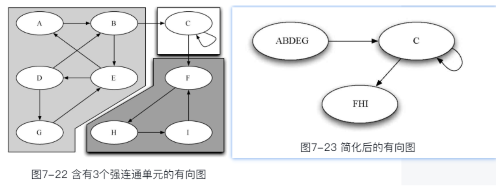
- 图的转置：一个有向图G的转置GT，定义为将图G的所有边的顶点交换次序，如将(v,w)转换为(w,v)，转置图和原图的SSC数量和划分相同
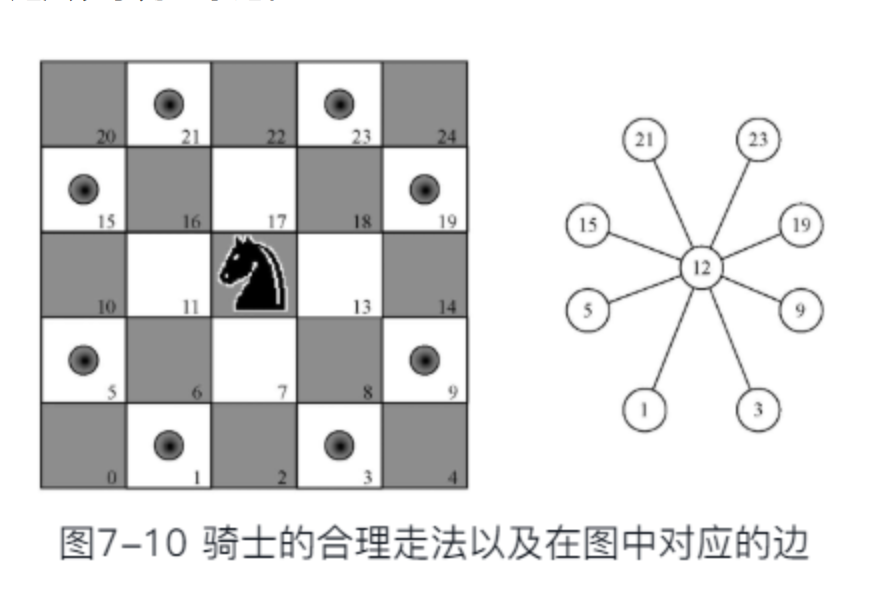
Kosaraju算法：
第一次 DFS
- 在原图上做 DFS，记录每个顶点的“完成时间”（finishing time）。
图转置
- 把原图里所有边的方向反过来，得到转置图（Transpose Graph）。
第二次 DFS
- 按照完成时间递减的顺序，在转置图上依次跑 DFS。
- 每次 DFS 能遍历到的顶点，就是一整个强连通分支。
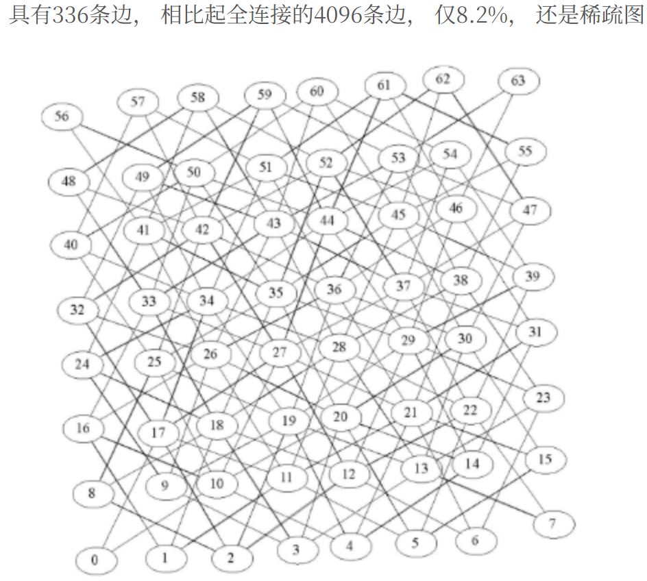
第一趟只遍历了1次，第二趟遍历了三次，划分出三组强连通分支：

带权图最短路径问题
Dijkstra算法
问题背景
Dijkstra 算法是求解 单源最短路径（Single-Source Shortest Path） 的经典算法。
- 输入：一个加权有向图（权值非负），起点
s。 - 输出：从
s到所有其他顶点的最短路径长度（也可以恢复具体路径）。
核心思想就是一个 贪心算法：
- 从起点出发，先确定距离起点最近的点。
- 然后以它为“中转站”，尝试更新别的点的最短距离。
- 一旦一个点被“选中”，它的最短路径就确定了，不会再变化。
- 不断重复，直到所有点都确定。
算法的具体流程
- 在顶点Vertex类中的成员dist用于记录从开始顶点到本顶点的最短带权路径长度（权重之和） ， 算法对图中的每个顶点迭代一次
- 顶点的访问次序由一个优先队列来控制，队列中作为优先级的是顶点的dist属性。
- 最初， 只有开始顶点dist设为0， 而其他所有顶点dist设为sys.maxsize（最大整数） ， 全部加入优先队列。
- 随着队列中每个最低dist顶点率先出队
- 并计算它与邻接顶点的权重， 会引起其它顶点dist的减小和修改， 引起堆重排
- 并据更新后的dist优先级再依次出队
def dijkstra(aGraph, start):
pq = PriorityQueue() # 优先队列容器
start.setDistance(0) # 将起点的距离设置为0
# 为每一个顶点建立优先堆(distance, vertex)
pq.buildHeap([(v.getDistance(), v) for v in aGraph])
while not pq.isEmpty():
currentVertex = pq.delMin() # 优先队列出队
for nextVertex in currentVertex.getConnections():
newDist = currentVertex.getDistance() + currentVertex.getWeight(nextVertex)
# 修改出队顶点距离
if newDist < nextVertex.getDistance():
nextVertex.setDistance(newDist)
nextVertex.setPred(currentVertex) # 设置前驱
pq.decreaseKey(nextVertex, newDist) # 更新距离，引起堆重排- 标准 Dijkstra 要求边权非负，允许零权边。出现负边时，已确定的距离可能被更短路径改写，结果不再有正确性保证；可改用 Bellman–Ford，并检查是否有从起点可达的负环。
- 虽然Dijkstra算法完美解决了带权图的最短路径问题， 但实际上Internet的路由器中采用的是其它算法
- 邻接表配合二叉堆实现时，时间复杂度为 \(O((|V|+|E|)\log |V|)\)。

最小生成树问题
图G(V, E)的最小生成树（MST）定义为：包含所有顶点V，以及E的无圈子集，并且边权重之和最短。
Kruskal算法
在介绍Kruskal算法之前，需要先理解一种数据结构：并查集UnionFind：
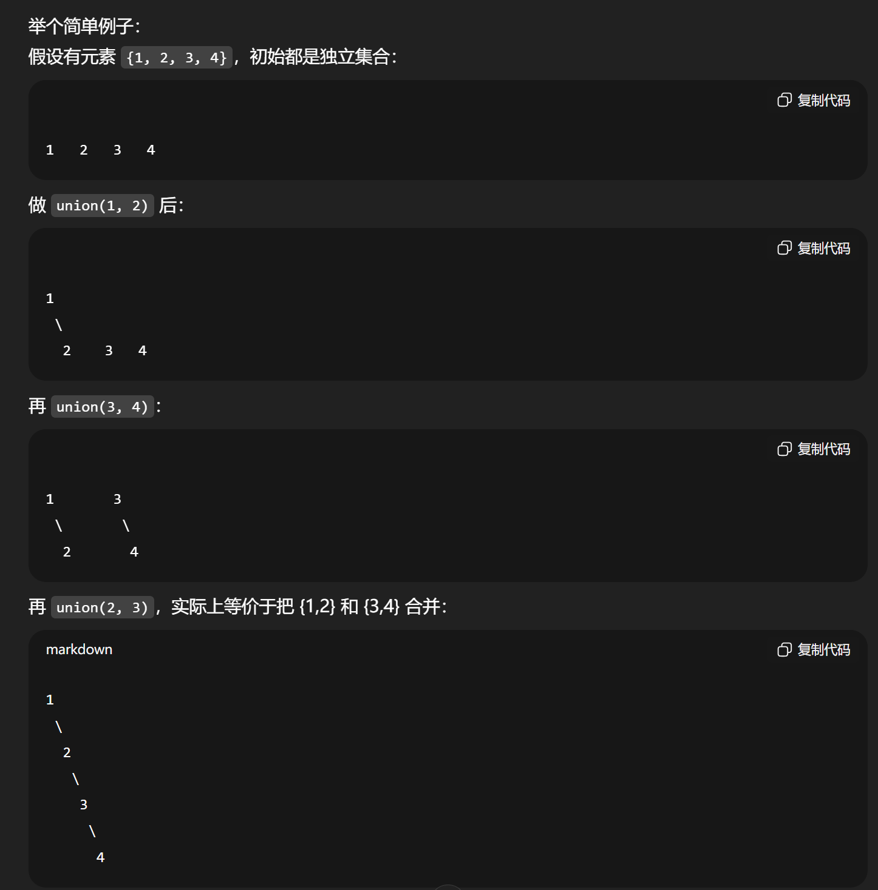
如果节点被放入同一个并查集，说明他们是联通的
class UnionFind:
def __init__(self, n):
# parent的元素：子 -> 父
self.parent = {v: v for v in n} # 初始化的时候，把传入的元素集合 n 全部拿出来，每个元素的父亲都设为自己。
def find(self, x):
if self.parent[x] != x: # 如果不是，就递归往上找它父亲的父亲，直到找到根。
self.parent[x] = self.find(self.parent[x]) # 路径压缩：在回溯的过程中把 x 的父亲直接改成根节点，下次再查的时候就很快。
return self.parent[x] # 如果 x 的父亲就是自己，那它就是根，直接返回。
def union(self, x, y):
rootx, rooty = self.find(x), self.find(y) # 先找到 x 和 y 的根节点。
# 如果根不同，说明它们不在同一个集合，那就把 rooty 的父亲指向 rootx，等于是把集合 y 挂到 x 上。
if rootx != rooty:
self.parent[rooty] = rootx
return True
return FalseKruskal的基本原理是：加边法
初始时取包含G中所有n个顶点但没有任何边的孤立点子图T=(V,{})，T里的每个顶点自成一个连通分量。下面将通过不断扩充的方式构造G的最小生成树。
将边集E中的边按权值递增的顺序排序，在构造中的每一步顺序地检查这个边序列，找到下一条(最短的)两端点位于7的两个不同连通分量的边e，把e加入T。这导致两个连通分量由于边e的连接而变成了一个连通分量。每次操作使T减少一个连通分量。不断重复这个动作加入新边，直到T中所有顶点都包含在一个连通分量里为止，这个连通分量就是G的一棵最小生成树。
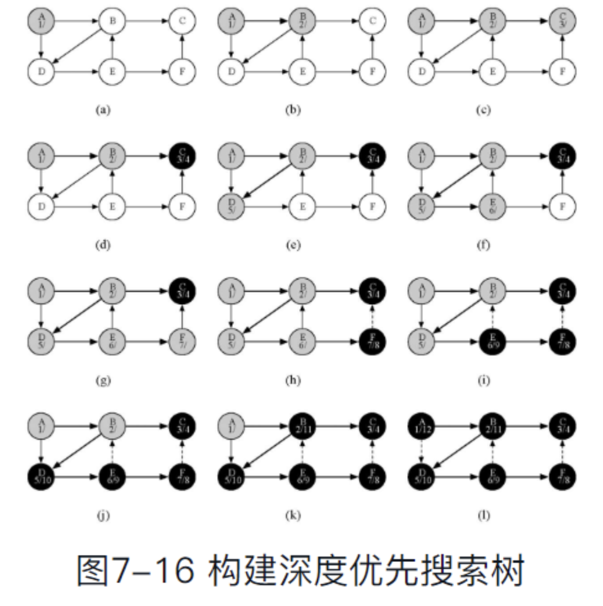
def Kruskal(graph, Graph):
edges = []
# 首先把边拿出来(weight, vertex, neighbor): (权重, 起点，终点)
for v in graph.vertList.values():
for nbr, w in v.connectedTo.items():
edges.append((w, v, nbr))
# 按照边的权重进行排序
edges.sort(key=lambda x: x[0])
# 初始化并查集
uf = UnionFind(graph.vertList.values())
mst = []
total_weight = 0
for w, v, n in edges:
if uf.union(v, n): # 如果u,v不在同一个集合，就加进去
mst.append((v.getId(), n.getId(), w))
total_weight += w
return mst, total_weightPrim算法
Prim的基本原理是：加边法。属于“贪心算法”， 即每步都沿着最小权重的边向前搜索。
随便选一个顶点作为起点。
从这个顶点出发，挑一条权值最小的边，把它连的那个点纳入生成树。
再从已经在树里的所有点出发，看外面剩下的点，找一条最小的边，把新点加进来。
在连通无向图中重复该过程，直到纳入所有顶点。如果输入不连通，这个实现只覆盖起点所在连通分量；要得到最小生成森林，需要从其他分量分别启动。
import heapq
from itertools import count
def prim(graph, start):
start_vertex = graph.getVertex(start)
if start_vertex is None:
raise KeyError(start)
visited = {start_vertex}
mst = []
total_weight = 0
order = count()
# 序号打破相同权重的平局，堆不需要比较 Vertex 对象。
edges = [(w, next(order), start_vertex, nbr)
for nbr, w in start_vertex.connectedTo.items()]
heapq.heapify(edges)
while edges and len(visited) < graph.numVertices:
w, _, v, n = heapq.heappop(edges)
if n in visited:
continue
visited.add(n)
mst.append((v.getId(), n.getId(), w))
total_weight += w
for nbr, weight in n.connectedTo.items():
if nbr not in visited:
heapq.heappush(edges, (weight, next(order), n, nbr))
return mst, total_weight数据分析篇（上）
NumPy库、数组与向量化计算
多维数组对象ndarray
ndarray的生成
- 可以使用
np.array()生成。
data1 = [1,2,3,4]
arr1 = np.array(data1)
#>>array([5, 6, 7, 8])
data2 = [[1,2,3,4],[5,6,7,8]]
arr2 = np.array(data2)
#>>array([[1, 2, 3, 4],
# [5, 6, 7, 8]])arr.ndim用于检查数组的维度arr.shape用于表征每一维度的数量arr.dtype用于检查数组中元素的类型（数据中的元素都是同类型的）- 给定长度和形状后，zeros可以一次性创造全0数组，ones可以一次性创造全1数组。
arr_zeros = np.zeros(10)
arr_ones = np.ones((2,3)) #如果需要指定形状，则要传入一个shape元组
arr_ones2 = np.zeros_like(arr2) #创建一个形状和arr2相同的全0数组np.arange是Python内建函数range的数组版
ndarray的数据类型
- dtype 是 NumPy 中用来描述数组中元素类型的对象，表示数据的类型（data type）。当你创建NumPy数组时，dtype决定了数组中每个元素的存储类型，以及它们在内存中的表示方式。
- dtype类型为数据类型 跟一个表示元素位数的数字，例如int32。
- 当需要在内存或硬盘上做深入的存取操作时，才需要了解dtype。
dtype的类型转化
arr.astype()方法（astype方法总会生成一个新的数组）
arr_string = np.array([3.7,-1.2,5.6,4.7],dtype = str)
#在生成数组的时候，用dtype=进行指定（这里书上给的是dtype = np.string，区别在哪里？）
arr_float = arr_string.astype(float)numpy数组算数（向量化）
- 向量化指可以批量对数组进行操作，而不用使用for循环
- 支持加减乘除幂等标量计算
- 同尺寸的数组进行比较，会产生一个布尔值数组
- 不同shape的数组计算：广播特性（略）
numpy索引与切片
- 一维索引较为简单，与前面的基本相似
- 区别于列表切片，数组的切片是原数组的视图，意味着数据并不是被复制了，任何对于视图的修改都会反映到原数组上
arr_or = np.arange(10)
arr_slice = arr_or[5:8]
arr_slice[:] = arr_slice**2
arr_or
#>>array([ 0, 1, 2, 3, 4, 25, 36, 49, 8, 9])
#这里可以看到：对切片的修改影响的原数组！- 切片操作
arr2d = np.array([[1,2,3],
[4,5,6],
[7,8,9]])
arr2d[1,:2] #返回第二行的前两列，是一个一维数组，np.shape() = (2,)
arr2d[1:2,:2]
#返回了一个二维数组, np.shape() = (1,2)布尔索引
names = np.array(['Bob','Joe','Alice','Bob','Will','Joe','Joe'])
names == 'Bob' #生成一个布尔值数组
data[names == 'Bob'] #可以将这个数组作为索引传入，筛选出满足条件的行- 当布尔值数组的长度不正确时，该方法不会报错，因此要小心。
- 用\~可以对索引条件取反,用&和|表示且与或，注意不是not,and,or.
condition = name == 'Alice'
data[~condition]- 使用布尔值索引选择数据时，总是生成数据的拷贝,即不改变原数组。（对数组的切片进行赋值时，会改变原数组）
神奇索引
- 在索引中传入的不再是一个整数或者整数范围，而是一个列表或者数组
arr3 = np.arange(32).reshape((8,4))
# array([[ 0, 1, 2, 3],
# [ 4, 5, 6, 7],
# [ 8, 9, 10, 11],
# [12, 13, 14, 15],
# [16, 17, 18, 19],
# [20, 21, 22, 23],
# [24, 25, 26, 27],
# [28, 29, 30, 31]])
arr3[[1,5,7,2],[0,3,1,2]] #神奇索引
# array([ 4, 23, 29, 10])数组转置与换轴
- 二维数组可用
A.T或A.transpose()转置；.T是属性，不带括号。 - 计算矩阵的内积
np.dot()
二维数组 \(A\) 与其转置的矩阵乘积是 \(AA^{\mathsf T}\)，可写为 A @ A.T 或 np.dot(A, A.T)。
- 对于更高维度的数组，transpose方法可以接收包含轴编号的元组，用于置换轴
arr4 = np.arange(24).reshape((2,3,4))
arr_transpose = arr4.transpose((1,0,2)) #将第一个轴和第二个轴进行置换
arr_transpose.shape # (3, 2, 4)- 转置是换轴的一个特例，换轴还有通用方法
swapaxes()
通用函数：快速逐元素数组函数
通用函数ufunc
一元通用函数
- 一元通用函数只需要一个输入数组。它对每个元素进行操作，并返回一个新的数组。
| 函数 | 作用 |
|---|---|
abs、fabs | 逐元素取绝对值。 |
sqrt | 平方根。 |
square | 平方。 |
exp | 自然指数。 |
log、log10、log2 | 分别取自然对数、常用对数、以 2 为底的对数。 |
log1p | 计算 log(1 + x)。 |
sign | 返回元素的符号。 |
ceil、floor | 分别向上、向下取整。 |
rint | 取最近的整数；正好居中时取偶数。 |
cos、sin、tan | 余弦、正弦和正切。 |
isnan | 返回布尔数组，标记哪些元素为 NaN。 |
二元通用函数
| 函数 | 作用 |
|---|---|
add、subtract、multiply、divide、power | 逐元素加、减、乘、除、乘方。 |
floor_divide | 整除，商向下取整。 |
mod | 取余数。 |
maximum、minimum\
最大值、最小值
使用数组进行面向数组编程
where方法
np.where方法是三元表达式的向量化版本
#要求：当cond中为True时，取xarr对应值，反之则取yarr对应值
xarr = np.array([1.1,1.2,1.3,1.4,1.5])
yarr = np.array([2.1,2.2,2.3,2.4,2.5])
cond_arr = np.array([True, False, False, True, False])
result = [(x if c else y) for x, y, c in zip(xarr, yarr, cond_arr)] #用列表推导式去生成
#可以简化为：
np.where(cond_arr, xarr, yarr)- np.where的第二个和第三个参数不一定是数组，也可以是标量，例如：
np.where(arr, 2, -2)
数学和统计方法
| 方法 | 作用 |
|---|---|
sum | 沿指定轴求和；空数组的总和为 0。 |
mean | 算术平均值；空数组的均值为 NaN。 |
std、var | 标准差、方差；可以调整自由度。 |
min、max | 返回最小值、最大值。区别于逐元素比较的 minimum 和 maximum。 |
argmin、argmax | 返回最小值、最大值所在的位置。 |
cumsum | 依次累加各元素，返回每一步的和。 |
cumprod | 依次累乘各元素，返回每一步的积。 |
mean()和sum()默认对整个数组求均值或总和，也可以用axis指定归约的轴。例如，二维数组按axis=0归约会得到每一列的结果。- 布尔数组的
sum()统计真值个数。例如，(arr8 > 9).sum()统计数组中有多少个元素大于 9。 any()检查是否至少有一个真值；all()检查是否全为真值。
sort方法
- 和列表相似，Numpy可以使用sort进行排序
- 可以指定axis
- 举例，如何从一个数组中选出前5%分位数？
large_arr = np.random.randn(1000)
large_arr_sorted = np.sort(large_arr)
large_arr_sorted[int(0.05*len(large_arr))]unique方法，以及其他的集合逻辑
np.unique() 返回的是数组中唯一值排序后形成的数组
- 其他的集合操作，见P115
使用数组进行文件输入与输出
np.save(), np.load()方法np.savez()方法
np.savez('array_archive.npz', a=arr6, b=arr7, c=arr8)
archive = np.load('array_archive.npz') #这里archive是字典形式
archive['a'] #从字典中取出key为a的array- 用
np.savez_compressed()将数据存入已经压缩的文件。
线性代数
略，见书P116
伪随机数生成
#两种生成（0,1）之间正态分布数据的方式
from random import normalvariate
samples = [normalvariate(0,1) for _ in range(N)]
samples_2 = np.random.normal(size = N)- np.random介绍
np.random.seed(42) # 设置种子,以确保结果可重复
random_numbers = np.random.rand(5) # 生成5个在[0, 1)之间的随机数
random_integers = np.random.randint(low=1, high=10, size=5) # 生成5个在[1, 10)之间的随机整数
normal_samples = np.random.randn(5) # 生成5个标准正态分布随机数
normal_samples_with_params = np.random.normal(loc=0, scale=1, size=5) # 指定均值和标准差
choices = np.random.choice(['apple', 'banana', 'cherry'], size=3) # 从水果中随机选择3个
np.random.shuffle(arr) # 原地打乱 arr 的顺序
#其他分布：如poisson分布，二项分布等。rand(n)生成 n 个随机数；randint(b)生成区间[0, b)内的一个随机整数。
一个示例：随机游走
import random
position = 0 #设置初始位置为0
walk = [] #承接每次游走后的position
steps = 1000
for i in range(steps):
step = 1 if random.randint(0,1) else -1 #返回的1和0可以被看做是布尔值
position += step
walk.append(position)
plt.plot(walk)#用numpy去实现
ran = np.random.randint(0, 2, 1000)
steps = np.where(ran >0,1,-1)
walk = np.cumsum(steps)#一次性模拟多个随机游走
nwalks = 5000
nsteps = 1000
draws = np.random.randint(0,2,size=(nwalks,nsteps))
steps = np.where(draws > 0, 1, -1)
walks = steps.cumsum(1)
# 只对实际触及 ±30 的路径求第一次；数组第 0 列对应第一步。
crossed = np.abs(walks) >= 30
hit = crossed.any(axis=1)
first_crossing_step = int(crossed[hit].argmax(axis=1).min() + 1) if hit.any() else NonePandas库
Series对象
- Series是一种一维的数组型对象
- 基本操作
obj2 = pd.Series([1,2,3,4], index=['a','b','c','d'])
#思考一下，下面的结果会返回什么？
obj2[['a','b','c']]
obj2[obj2>2]
obj2**2
'b' in obj2- 可以直接通过一个字典生成Series
obj3 = pd.Series(dict1)- 这个方法也可以指定一个索引列表，用以指定索引排列的顺序，当列表中的键没有出现在数据中时，value会返回NaN，当字典数据的键没有出现在列表中时，它将被排除在外。
- Pandas用isnull notnull检查缺失数据
sdata = {'Shenyang': 3000, 'Beijing': 2000, 'Shanghai': 1000}
obj3 = pd.Series(sdata,index = ['Beijing','Shanghai','Shenzhen'])
#Beijing 2000.0
#Shanghai 1000.0
#Shenzhen NaN
#dtype: float64- Series具有数据对齐的特性，类似于数据库的join
- Series对象自身和索引都具有name属性，这个特性与其他功能集成在一起
obj3.name = 'Preference'
obj3.index.name = 'City'- Series的索引可以通过按位置赋值的方式进行改变
obj3.index = ['BJ', 'SH', 'SZ']DataFrame对象
Dataframe的创建
1. 利用包含等长度列表或数组的字典创建dataframe
2. 利用包含字典的嵌套字典：将字典的键作为列，将内部字典的键作为行索引
data = {'state':['Ohio','Ohio','Ohio','Nevada','Nevada','Nevada'],
'year':[2000,2001,2002,2000,2001,2002],
'pop':[1.5,1.7,3.6,2.4,2.9,3.2]
}
frame = pd.DataFrame(data)
frame = pd.DataFrame(data, index = np.arange(1,7), columns = ['year','state','pop','GDP']) #可以对index和columns做出指定frame[column]对于任意列名均有效（例如增添新列）；而frame.column只对已有的列名生效。
frame['eastern'] = frame.state == 'Ohio'
frame['area'] = pd.Series([2,2,2], index = [1,2,3])
- del方法用于移除之前的列
Index(索引对象)
- pandas的索引对象用于储存轴标签和其他元对象（例如轴名称或标签）
index = frame.index
# Index([1, 2, 3, 4, 5, 6], dtype='int32')- 索引对象不可修改，不变性使得在多种数据结构中分享索引对象更加安全
labels = pd.Index(np.arange(3)) #创建索引对象
obj2 = pd.Series([1.5,-2.5,0], index = labels)- 在实际工作中，用户并不经常创建索引对象，但是一些操作会返回包含索引化的结果，所以理解索引如何工作还是很重要的。
- 索引有集合的性质，但是可重复，常见操作如下：(P135)
基本操作
1. 重建索引（reindex方法）
obj = pd.Series([4.5,7.2,-5.3,3.6],index=['d','c','b','a'])
obj.reindex(['a','b','c','d','e']) #复习的时候可以自己想一下结果- 当有缺失值时，可以指定
fill_value =,也可以指定method='ffill'(向前填充)和'bfill'向后填充
2. 轴向上删除条目（drop方法）
data.drop(['A','C'], axis=1, inplace = True)
#通过指定一个axis，来决定是按行删除还是按列删除
#inplace的默认值为False，当指定inplace为True时，会直接在原dataframe上做出修改3. 索引、选择、过滤（loc、iloc、at方法）
- 对于Series来说：
obj3['a']
obj3[['a','b','c']]
obj3['a':'c'] #注意这个范围左右都是封闭的
obj3[obj3<2]
obj3[index] = 2
## 数字索引还可以使用，但是在今后将不被支持- 对于DataFrame来说:
- 为了更加精确处理pandas的索引，有两个方法被推出了：loc（标签索引）和iloc（整数索引）

#1.一种便利情况，用于选择单列或者列序列
data[['A','C']]
#2.df.loc[val] 选择单行或多行
#3.df.loc[:, val] 选择单列或多列（和1的作用差不多）
#4.df.loc[val1,val2] 同时选择行和列的一部分
#5.df.iloc方法：与loc类似，不过需要传入的是整数索引
#6.df.at/df.iat方法：用于选取单个值4. 算数和数据对齐
- 对对象相加或相减，如果存在索引对不同，则返回的是索引对的并集，用NaN填充缺失值。类似于数据库的自动外连接。
- 如果将两个行或列完全不同的Dataframe相加，结果全部为空。
df1.add(df2,fill_value = 0)5. Dataframe和Series之间的操作
# 第一行的 Series 按列标签对齐，给每一行减去相同的各列值。
series = frame.iloc[0]
frame.sub(series, axis="columns")
# 第一列的 Series 按行标签对齐，给这一行的各列减去同一个值。
series = frame.iloc[:, 0]
frame.sub(series, axis="index")6. 函数应用和映射(apply、map方法)
- numpy的通用函数ufunc对pandas对象也有效
apply()方法：一个dataframe方法，将函数应用到一行或一列的一维数组上（指定一个axis）
func = lambda x: x.max() - x.min()
frame.apply(func, axis = 0) #默认情况，对每一列应用函数
frame.apply(func, axis = 1) #对每一行应用函数
#传递给apply的函数不一定一定返回一个标量值，也可以返回带有多个值的Series
def func2(x):
return pd.Series([x.min(), x.max()], index=['min',])
frame.apply(func2)
#逻辑：返回frame每一列的最大值与最小值map()方法：一个dataframe和series共有方法，逐元素方法
format = lambda x: '%.2f' % x
frame.map(format) #对dataframe使用map方法
frame['b'].map(format) #对Series使用map方法7. 排序和排名
sort_index方法
or_list = list(range(1,4))
np.random.shuffle(or_list) #这里复习一下np.random.shuffle方法，它只能将序列就地打乱，而不返回任何值
frame2 = pd.DataFrame(np.random.normal(0,2,12).reshape(3,4), index = or_list, columns = ['d','c','b','a'])
frame2.sort_index(axis = 1, inplace = True)
frame2.sort_index(axis = 0, inplace = True)
#这里一次只能sort_index一个轴- 通过指定
ascending = False进行降序排序
sort_values方法
- 当对dataframe排序时，可以使用一列或者多列作为排序键，需要传入参数by
frame3 = pd.DataFrame({'b':[4,7,-3,2], 'a':[0,1,0,1]},index = np.arange(1,5))
frame3.sort_values(by = 'b', ascending = False)
frame3.sort_values(by = ['a','b'], ascending = False)rank方法
- 对数据按照大小进行排名
- 如果存在两个数据相同，默认方法
method = average无法打破平级关系，类似的max和min方法也不行。可以通过first(谁先出现，谁靠前)来处理
frame3.rank(axis = 0, ascending = False, method = 'first')8. 处理含有重复标签的轴索引（is_unique属性）
- 重复索引的情况可以出现，但是并不支持这么做
- 通过
obj.index.is_unique检查是否存在重复索引- 注：这里is_unique不是一个方法，而是一个属性
描述性统计概述
相关系数与协方差
本节待补。
唯一值、计数与成员属性
本节待补。
数据载入、存储与文件
pandas显示设置
pd.set_option('display.max_rows', 5) # 设置最大显示行数为5
pd.set_option('display.max_columns', 5) # 设置最大显示列数为5
pd.set_option('display.max_colwidth', 10) # 设置最大列宽为10个字符
pd.set_option('display.float_format', lambda x: '%.2f' % x) # 设置浮点数显示格式为保留两位小数
pd.set_option('display.expand_frame_repr', False) # 不在行数超出限制时换行显示CSV文件读写
读取CSV文件
- CSV意为：Comma-separated Values（用逗号分隔的值）
- 两个方法：
pd.read_table()和pd.read_csv()，他们的区别在于：分隔符不同，table方法使用制表符\t，csv方法使用逗号作为分隔符。
常用参数（6个）
| 参数 | 用途与示例 |
|---|---|
sep | 指定分隔符，例如 ','；也可使用正则表达式。 |
header | 指定哪一行作为列名。未传 names 时默认推断首行为表头；无表头时用 header=None，列名从 0 编号。 |
names | 手动指定列名。要替换文件已有的表头，同时设置 header=0。 |
skiprows | 整数 n 表示跳过开头 n 行；列表表示跳过指定行号（从 0 开始）。 |
index_col | 用列位置或列名指定索引，如 0 或 'A'；传 [0, 1] 可建立两级索引。 |
na_values | 用字符串或列表指定缺失值标记；用字典分别指定各列的标记。 |
# This is a comment
# This is another comment
, Name, Age, City
1, Alice, 30, New York
2, Bob, 25, Los Angeles
3, Charlie, 35, Chicago你希望读取这个CSV文件，并执行以下操作：
- 跳过前两行（注释行）。
- 使用逗号作为分隔符。
- 将第一列（未命名的列）作为索引。
- 将列名手动指定为
['ID', 'Name', 'Age', 'City']。
# 跳过开头两行注释和旧表头，再指定列名
df4 = pd.read_csv('test_3.csv', skiprows = 3, sep = ',', header = None, names= ['ID','Name','Age','City'], index_col = 0)分块读入CSV文件
chunker = pd.read_csv('large.csv',chunksize = 50, encoding = 'gbk')指定 chunksize 或 iterator=True 时，pd.read_csv() 返回 TextFileReader，每次迭代得到一个 DataFrame。
写入csv文件
data.to_csv()方法- 当指定输出路径为
sys.stdout时，结果将会被输出到控制台中
参数选项
| 写入参数 | 作用 |
|---|---|
sep | 指定输出分隔符。 |
na_rep | 指定缺失值的输出文本，默认是空字符串。 |
index | index=False 不写行索引。 |
header | header=False 不写列名。 |
columns | 只写入指定列。 |
特殊情况处理：使用分隔格式
csv.reader模块：\<略>- 更复杂的情况：使用
re.split和正则表达式进行处理
JSON数据
- JSON数据已经成为Web浏览器和其他应用通过HTTP请求发送数据的标准格式，非常接近有效的Python代码。
result = {
"students": [
{
"id": 1,
"name": "Alice",
"age": 22,
"courses": ["Mathematics", "Physics"]
},
{
"id": 2,
"name": "Bob",
"age": 23,
"courses": ["Chemistry", "Biology"]
},
{
"id": 3,
"name": "Charlie",
"age": 21,
"courses": ["History", "Literature"]
}
]
}frame_json = pd.DataFrame(result['students'], columns = ['name','age','courses'])
- 用
json.load()和json.dump()实现python对象与json对象的相互转换。
with open('data.json', 'r') as file:
data = json.load(file)
print(data) # 输出: {'name': 'Alice', 'age': 25, 'courses': ['Math', 'Science']}
with open('output.json', 'w') as file:
json.dump(data, file, indent=4)pd.read_json()方法可以自动将JSON数据集按照指定次序转化为Series或DataFrame。反之则用data.to_json
HTML和XML与网络抓取
- Python中可以对HTML和XML进行解析的库：
lxml, Beautifulsoup, html5lib。 - Pandas内建函数：read_html使用lxml和BeautifulSoup自动解析为Dataframe对象
使用lxml.objectify解析XML
本节待补。
xls与xlsx数据
本节待补。
二进制格式数据
本节待补。
Web交互与数据库交互
本节待补。
数据清洗与准备
缺失值
- pandas采用浮点值NaN（Not a number）来表示缺失值，NaN为容易检测到的标识值
- NA（Not Available）
# how 与 thresh 分开使用：有缺失就删除，或要求至少两个非缺失值。
df.dropna(how="any")
df.dropna(thresh=2)
df.fillna(0)
df.ffill(limit=2)
df.bfill(limit=2)
# 对 DataFrame 调用，得到同形状的布尔 DataFrame。
df.isna()
df.notna()fillna()方法可以传入一个字典，用以指定每一列应该填入的内容- 传入一个行/列的平均值进行赋值
data2.fillna({'A':0.05, 'B':0.1, 'C':0.01})
data2_filled = data2.fillna(value = data2.mean(axis = 0))数据转换
删除重复值
data.duplicated()返回布尔 Series，每行一个值。默认keep='first'：首次出现标记为 False，后续重复行标记为 True。data.drop_duplicates()返回的DataFrame，内容是duplicated数组中返回值为False的部分- 这两个方法都是默认保留第一个重复观测值，如果希望保留最后一个，传参
keep = 'last'
使用函数或映射进行数据转换
- 使用
map方法完成映射 - 小例子：在一个城市数据中按照city列的结果添加一列is_capital，表明是否为直辖市
def is_capital(city):
if city in ['Beijing','Shanghai','Chongqing','Tianjin']:
return True
else:
return False
df[is_capital] = df['city'].map(is_capital)
# 更加简便的方法：用匿名函数与三元表达式
capital_list = ['Beijing','Shanghai','Chongqing','Tianjin']
df[is_capital] = df['city'].map(lambda x: True if x in capital_list else False)替代值
replace方法
data.replace(-999, np.nan) #单值替换
data.replace([-999,-1000],np.nan) #多值替换为同一值
data.replace([-999,-1000],[np.nan,0])
data.replace({-999:np.nan, -1000:0}) #不同值替换为不同值（可以传入列表或字典，注意传入顺序）重命名轴索引
- index和columns也有map方法，例如：将行索引（城市名称）改成取前4个字母并大写：
data.index = data.index.map(lambda x: x[:4].upper())rename方法：
data.rename(index=str.title, columns=str.upper) # 在原有的索引基础上进行修改
data.rename(index={'Beiijing':'Beijing'}, columns={'city':'city_name'})离散化与分箱处理
- 将连续值离散化，并分入“箱子”中去
ages = list(np.random.randint(0,100,100))
bins = [-1,18,25,35,65,100]
cats = pd.cut(ages,bins) # 分箱处理pd.cut()返回的是一个Categorical类型的对象，操作如下：
cats.codes # 返回整数编码的数组
cats.categories # 返回分类区间，pd.IntervalIndex对象
cats.value_counts() # 对结果中箱数量的计数- 默认参数
right = True表明左开右闭（切片一般为左闭右开），可以指定right=False进行更改。 - 通过指定
labels = []更改箱名 - 如果传递给箱的不是一个列表，而是一个整数，pandas会自动根据数据计算等长的箱，例如指定bins =4，则将样本均匀地分为4份。
cats2 = pd.cut(ages, 4, precision=2) # precision选项将精度限制在两位qcut方法基于样本的分位数进行分箱操作。
pd.qcut(data,[0,0.1,0.5,0.9,1.])
pd.qcut(data,4) #根据数据将样本分为等量的四份进行分箱- 注：当共同指定bin = int时，qcut和cut方法不同，qcut是等量分箱，cut是等距分箱
检测过滤异常值
- 描述性统计：
data.describe() - 找出data中A列的绝对值大于3的行：
data[np.abs(data['A']) >= 3]- 找出ABCD列任一列绝对值大于3的行
data[(np.abs(data) > 3).any(axis = 1)]- 对数据进行99%Winsor缩尾
置换和随机抽样
- 使用
np.random.permutation()对DataFrame的行进行重新排序：
data = pd.DataFrame(np.arange(20).reshape((5,4)))
sampler = np.random.permutation(5)
data.iloc[sampler] #或者使用data.take(sampler)- 对DataFrame进行随机抽样：
data.sample(n=3) #不放回抽样
data.sample(n=10, replace=True) #放回抽样计算指标/虚拟变量
- 如果DataFrame的一列有k个不同值，则可以衍生一个k列的值为01的矩阵或DataFrame
get_dummies方法
dict_A = {'key':['b','b','a','c','a','b'], 'data1':range(6)}
df = pd.DataFrame(dict_A)
dummies = pd.get_dummies(df['key'], prefix='key')
df_with_dummies = df.join(dummies)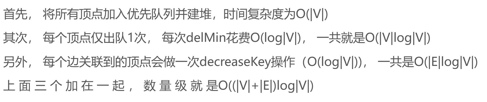
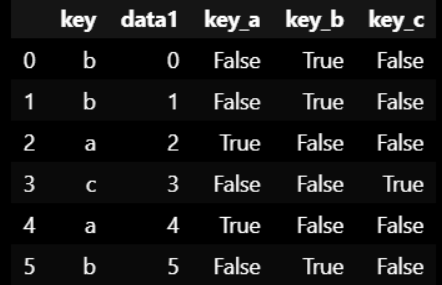
字符串操作
原生字符串（raw string）
- 通过在字符串前面加r，使得反斜杠不会被当做Python的转义字符
- 下面两种路径都是正确的：
- r'C:\xxx'
- 'C:\\xxx'
Python内建字符串处理方法
split()方法
val = 'a,b, guido'
val.split() # 这种方法处理的一个问题在于：字符串中会存在空格（如何处理）
pieces = [x.strip() for x in val.split(',')]join()用指定分隔符连接字符串。拆分和拼接使用同一分隔符且未丢失信息时，可以还原原字符串。
'+'.join(pieces)replace()方法，用一种模式替代另一种模式（可以传入空字符）count()方法，返回字符串出现的次数- 定位子字符串：
in,find()和index()str.find()找不到时返回 -1；str.index()找不到时抛出ValueError。
startswith(), endswith()字面意思，返回布尔值lower()、upper()、title()用于转换大小写。
正则表达式（REGEX）
- 测试网站: regex101.com
正则表达式基础语法
- ？表示前面的字符可出现0次或1次

- \*表示前面的字符可出现0次或多次
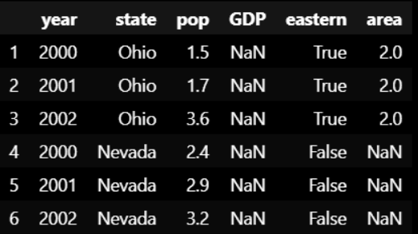
- +表示前面的字符要出现1次及以上

- {}可以限定前面字符出现的数量范围

- 重复匹配：例如匹配ab单元重复出现两次以上的模式

- 或表达式

- 字符类

[a-z]匹配 ASCII 小写字母，[A-Z]匹配 ASCII 大写字母，[0-9]匹配 ASCII 数字。.默认匹配换行符以外的任意字符。- 特殊字符类（大写形式取反）：
\d匹配十进制数字；\D匹配非十进制数字。\w匹配字母数字或下划线；\W匹配其余字符。\s匹配空白字符；\S匹配非空白字符。
^和$用于匹配开头和结尾。
捕获组与非捕获组
- 捕获组：会保存匹配的内容，并可以在后续的处理（如替换、分组引用等）中使用它们。通过数字编号（从 1 开始）来引用捕获的内容。
- 非捕获组：只用于分组（例如，用来控制操作符的应用范围），但不会保存匹配的内容，不能通过组号引用这些内容。
import re
text = '132-4567-7890'
pattern1 = r'(\d{3})-(\d{4})-(\d{4})' # 均为捕获组
match1 = re.match(pattern1, text)
print(match.group(1)) #132
print(match.group(2)) #4567
print(match.group(3)) #7890
pattern2 = r'(?:\d{3})-(\d{4})-(\d{4})' # 均为捕获组
match2 = re.match(pattern2, text)
print(match2.group(1)) #4567
print(match2.group(2)) #7890贪婪匹配与懒惰匹配
- 贪婪匹配（Greedy Matching）在满足正则表达式的前提下，自动匹配最长的字符串
- 懒惰匹配\~匹配最短的
- 例子1
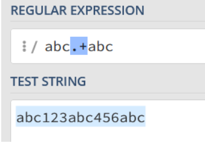

贪婪匹配
在通配符后添加一个？改为懒惰匹配
前瞻与回顾
- 前瞻（Lookahead）与回顾（Lookbehind）用于检查某个模式在当前位置之前或之后是否满足某个条件（而不会把他们包含在最终的匹配结果中）
| 模式 | 匹配条件 | 写法 |
|---|---|---|
| 正向前瞻 | X 后紧跟 Y | X(?=Y) |
| 负向前瞻 | X 后不紧跟 Y | X(?!Y) |
| 正向回顾 | X 前紧邻 Y | (?<=Y)X |
| 负向回顾 | X 前不紧邻 Y | (?<!Y)X |
正则表达式例题
- 给定文本「请联系
support@company.com获取帮助，或通过admin@company.com提供反馈」，写出提取其中所有邮箱地址的正则表达式。
[a-zA-Z0-9._%+-]+@[a-zA-Z0-9.-]+\.[a-zA-Z]{2,}- 在一个字符串"联系方式：+86 138-0011-0022 和 13800110022"中，匹配出格式为中国大陆手机号码的部分，包括不同的分隔方式（如空格、-、没有分隔符）。
(\+86[\s-]?)?1[3-9][0-9]([\s-]*[0-9]{4}){2}- 匹配一段文本中所有包含中文引号和中文书名号中的内容
“([^“”]*?)”|《([^《》]*?)》- 匹配所有的日期格式，如2023-01-05，20230523，2023.1.5（要求：如果用户在前后使用了不同的连接符，则不进行匹配）
^(?:(?:\d{4}[-./])?(?:\d{1,2})[-./](?:\d{1,2})|(?:\d{1,2})[-./](?:\d{1,2})[-./](?:\d{4}))$re模块
re.match()如果模式匹配成功，它返回一个匹配对象；如果匹配失败，则返回None。- 匹配结果可以通过
result.group()返回。
- 匹配结果可以通过
re.search(pattern,string)扫描整个字符串，找到第一个匹配的地方。- match和search的区别在于：完全匹配与内含模式匹配
pattern = r'1[3-9]\d-\d{4}-\d{4}'
string = '我的电话号码是158-4001-1911'
match = re.match(pattern, string)
print(match) # None：号码不在字符串开头
re.search(pattern, string).group() # '158-4001-1911're.findall(...)，扫描字符串并返回全部匹配的地方（列表形式）
re.finditer() 与findall类似，但是返回的是一个迭代器
re.replace(pattern, replacecontent, string)将符合正则表达式的部分替换成目标内容re.split(...)根据正则表达式分割字符串，并返回一个列表- 例：给定一段英文歌词，尝试生成两个列表，其中一个包含歌词的所有词汇，另一个包含歌词的所有分句
with open ('chorus.txt', 'r', encoding='utf-8') as f:
string = f.read()
pattern_for_word = '[\s,.]+'
pattern_for_piece = '[,.]+'
result_1 = [x.strip() for x in re.split(pattern_for_word, string) if x.strip()]
result_2 = [x.strip() for x in re.split(pattern_for_piece, string) if x.strip()] # 这里if语句的作用是去除可能存在的空字符串（如果字符串为空，则if None）- 一个特殊的方法（正则表达式的Flag）：
re.IGNORECASE使正则表达式不区分大小写
或者这样使用re.findall(pattern, string, flags=re.IGNORECASE)
Pandas 向量化字符串函数
- 基本语法：
data.str.[方法]()
import numpy as np
email_dict = {
'Alice': 'alice@google.com',
'Bob': 'bob@gmail.com',
'Charlie': np.nan, # 使用 np.nan 作为值
'David': 'david@gmail.com',
'Eva': 'eva@firefox.com'
}
data = pd.Series(email_dict)
data.str.contains('gmail') #返回（True， False， NaN）
matches = data.str.match(r'[a-zA-Z0-9._%+-]+@[a-zA-Z0-9.-]+\.[a-zA-Z]{2,}')数据分析篇（下）
Matplotlib与可视化
matplotlib API入门
- 导入惯例
import matplotlib.pyplot as plt图片与子图、调用机制
- mat绘制的图位于图片对象中（Figure）
fig = plt.figure()
# 用fig.add_subplot()方法添加子图
ax1 = fig.add_subplot(2,2,1)
ax2 = fig.add_subplot(2,2,2)
ax3 = fig.add_subplot(2,2,3)
ax4 = fig.add_subplot(2,2,4)
# 绘制子图
ax1.plot(np.random.randn(50).cumsum(), 'k--')
ax2.hist(np.random.randn(500), bins=20, color='k', alpha=0.3)
ax3.scatter(np.arange(30), np.arange(30)+3*np.random.randn(30))
# 展示
plt.show()plt.show()为阻塞式调用方法，会释放内存中的所有图形资源，并阻碍下面代码的运行。（可以指定block=False改为非阻塞式调用）- 在使用内联绘图后端的 Jupyter Notebook 中，通常不用显式调用
plt.show()也能显示图像。 - 如果一次只创建一个图形，就不需要显式定义Figure对象
- 在使用内联绘图后端的 Jupyter Notebook 中，通常不用显式调用
fig1 = plt.figure(1) # 指定当前活动图形
plt.plot(np.random.randn(1000).cumsum()) # 将图形命令分配给Figure1
fig2 = plt.figure(2) # 重新指定当前活动图形为Figure2
plt.plot(np.random.randn(500).cumsum()) # ...
plt.show() #将内存中的Figure1和Figure2同时释放，并阻塞命令行plt.subplots(2, 2)一次创建一个 Figure 和四个 Axes，比逐个调用add_subplot()更直接。- 返回的
axes可按行列索引；左上角是axes[0, 0]。
- 返回的
fig, axes = plt.subplots(2,2)
# axes[0,0]：此处省略绘图代码
# axes[0,1]：此处省略绘图代码
# 略plt.subplots()其他选项sharex与sharey所有子图使用相同的x\y刻度figsize以元组\宽度，高度\ 的形式传入dpi分辨率：默认值为100
plt.subplots_adjust()用于调整subplot子图周围的间距
plt.subplots_adjust(left=None, bottom=None, right=None, top=None, wspace=0, hspace=0)Figure对象与Axes对象
- Figure是顶层画布，相当于一张纸
- Figure对象常用属性和方法：
- figsize画布大小；dpi分辨率
- fig.add_subplot()添加子图
- fig.savefig()保存图片
- Figure对象常用属性和方法：
- Axes是图中的实际绘图区域，一个Figure对象中可以有多个Axes对象
- Axes对象常用属性和方法：
axes.plot()折线；axes.scatter()散点图axes.set_title()设置标题axes.set_xlabel()/ylabel()设置标签axes.set_xtick()/ytick()设置标签刻度
- Axes对象常用属性和方法：
pyplot的状态机接口机制
- 通过这一接口，用户可以快速绘图，而不需要显式创建和管理 Figure 和 Axes 对象。（适用于简单情况的）
- 例如：
plt.plot()：实际上是根据用户的需求隐式创建了axes对象，并对axes对象进行操作
颜色、标记和线类型
- plot函数接收带有x和y的数组，以及可选的字符串缩写参数来指明颜色和线类型。
ax.plot(x, y, 'go--') #marker必须在color后面
ax.plot(x, y, color='g', marker='o', linestyle='--') # 显式表达- 可以通过十六进制颜色编码指定颜色
drawstyle选项- 三种：steps-pre; steps-mid; steps-post
plt.plot(data, 'bo--', label='Default')
plt.plot(data, 'g-', drawstyle='steps-post', label='steps-post') #后跳步方式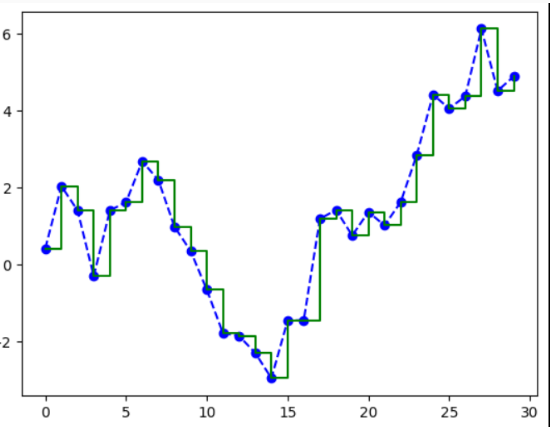
刻度与标签
- 对axes对象：
fig = plt.figure()
ax = fig.add_subplot(1,1,1)
# 以下全部是axes对象方法
ax.plot(np.random.randn(1000).cumsum())
xticks = ax.set_xticks([0,250,500,750,1000])
xlabel = ax.set_xlabel('Stages')
xticklabels = ax.set_xticklabels(['one','two','three','four','five'], rotation=30, fontsize='small')
xtitle = ax.set_title('My first matplotlib image')- 或者，也可以通过
axes.set(**kwargs)传入：
props = {
'title':'My first image',
'xlabel':'Stages'
} # 参数字典
fig = plt.figure()
ax = fig.add_subplot(1,1,1)
ax.plot(np.random.randn(1000).cumsum())
ax.set(**props)图例
设置label参数
fig, axes = plt.subplots(1,1)
axes.plot(np.arange(1000),np.random.normal(0,1,1000), label='one')
axes.plot(np.arange(0,1000,10),np.random.normal(0,1,100), label='two')
axes.plot(np.arange(0,1000,100),np.random.normal(0,1,10), label='three')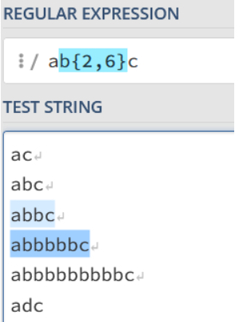
创建图例
ax.legend()/plt.legend()方法
axes.legend(loc='best')- 如果希望调用ax.legend()方法时不生成某个图像的图例，不指定label或
label=‘nolegend’即可。
注解
ax.text();ax.arrow();ax.annotate方法- 下面的案例，可以学完时间序列回头看
from datetime import datetime # 这里注意导入方式
spx = data['SPX']
crisis_data = [
(datetime(2007,10,11),'Peak'),
(datetime(2008,3,12),'Bear Sterns Fails'),
(datetime(2008,9,15),'Lehman Bankruptcy')
]
fig, axes = plt.subplots(1,1)
axes.plot(spx, 'k-') # 黑色实线
for date,label in crisis_data:
axes.annotate(label, xy=(date, spx.asof(date)+75),
xytext=(date, spx.asof(date)+225),
arrowprops={'facecolor':'black',
'headwidth':4,
'width':2,
'headlength':4})
axes.set_xlim([datetime(2007,1,1),datetime(2011,1,1)])
axes.set_ylim([600,1800])将图片保存到文件
fig.fivefig()/ plt.savefig()fname指定文件名称dpi指定分辨率format指定格式bbox_inches要保存的图片范围，如果传递tight，则会去除掉空白部分
Axes图表方法
Series.plot()和DataFrame.plot()方法：是Pandas内建的简化可视化过程的方法。
折线图
- 基本语法：
Axes.plot(*args, **kwargs)
柱状图
- 基本语法：
Axes.bar(x, height, width=0.8, bottom=None, align='center', color=None, edgecolor=None, **kwargs)- x为分组，height为每组的高度
- width是每个柱的宽度
- bottom定义柱子在 y 轴方向上的起点，默认从 0 开始
- align控制柱子与xtick的对齐方式
- center即中心对齐
- edge为左对齐
- color为柱子的颜色，edgecolor为柱子边框的颜色
df = pd.DataFrame(np.random.randn(10,4).cumsum(0),
columns=['A','B','C','D'],
index = np.arange(0,100,10))
# 对df每组的sum进行柱状图统计
df_sum = df.sum(0) #Series类型
plt.bar(df_sum.index, df_sum)
# 或者，直接用Pandas内置方法
df_sum.plot.bar()
堆叠柱状图
- 基本原理：控制bottom参数，使第二组数据"堆叠"在第一组上
# 数据
cat = ['A', 'B', 'C']
g1 = [3, 5, 7]
g2 = [2, 4, 6]
g3 = [1, 3, 4]
fig, ax = plt.subplots(1,1)
ax.bar(cat, g1, color='blue', label='A')
ax.bar(cat, g2, color='red', bottom=g1, label='B')
ax.bar(cat, g3, color='orange', bottom=[i+j for i,j in zip(g1,g2)], label='C') # 注意这里列表推导式的使用
plt.legend(loc='best')
交叉柱状图
- 核心是重新定义n组X轴刻度位置，再重新标注刻度
fig, ax = plt.subplots()
#定义x轴位置与偏移量
width = 0.2
x = np.arange(len(cat))
# 作图
ax.bar(x - width, g1, width=width, label='Group 1', color='blue') # 第一组
ax.bar(x, g2, width=width, label='Group 2', color='green') # 第二组
ax.bar(x + width, g3, width=width, label='Group 3', color='orange')# 第三组
# 重新设置x轴刻度
ax.set_xticks(x)
ax.set_xticklabels(cat)散点图
- 基本语法：
Axes.scatter(x, y, s=None, c=None, marker=None, cmap=None, alpha=None, edgecolors=None, **kwargs)
直方图与密度图
直方图
axes.hist()方法
data = np.random.randn(1000000)
# 使用matplotlib绘制直方图
plt.hist(data, bins=30, color='blue', alpha=0.7) #bins指定了分组的数量
plt.title('Histogram using matplotlib')
plt.xlabel('Value')
plt.ylabel('Frequency')
plt.show()- 这里bins也可以传入区间边界，例如
bin = [-3, -2, -1, 0, 1, 2, 3]，实现分组
密度图
sns.kdeplot()方法
import seaborn as sns
sns.kdeplot(data, shade=True, color='red')
plt.title('Density Plot using seaborn')
plt.xlabel('Value')
plt.ylabel('Density')
plt.show()时间序列
日期和时间数据的类型
时间序列类型
- 时间戳Timestamp：具体的时刻
- 固定时期period：例如2007年1月或整个2010年
- 时间间隔interval：由起始和结束时间戳表示
time模块
- 提供简单低等级的时间操作
- 获取当前时间戳
time.time() - 程序暂停功能
time.sleep(second)
- 获取当前时间戳
datetime模块
- 高级别的时间操作
- 导入方式
from datetime import datetime- 获取当前时间
now = datetime.now()
now # datetime.datetime类型- 时间加减
date1 = datetime(2011,1,7)
date2 = datetime(2024,4,5)
delta = date2 - date1
delta.days # datetime.timedelta类型字符串与datetime类型的互相转化
- 使用str方法或者传递一个指定的格式给
strftime()方法对datetime对象或pandas的Timestamp对象进行格式化- %Y 四位年份， %y两位年份
- %m 两位年份
- %d 两位日期
- %H 24小时制小时，%I 12小时制小时
- %M 两位数的分钟
- %S 秒
stamp = datetime(2011, 1, 3)
stampstr = stamp.strftime('%Y-%m-%d')datetime.strptime()将字符串对象转化为datetime对象
datestrs = ['7/6/2011', '8/7/2017']
[datetime.strptime(x, '%m/%d/%Y') for x in datestrs]- dateutil包的parser.parse方法：能够解析大部分人类可理解的日期表示
- 参数
dayfirst=True显式表明日期在月份之前
- 参数
from dateutil.parser import parse
parse('JAN 31, 1997, 10:45 PM')
#>>datetime.datetime(1997, 1, 31, 22, 45)- pandas的
to_datetime()方法
idx = pd.to_datetime(datestrs + [None])
idx[2] #>>NaT(Not a Time)
pd.isnull(idx)
#>>array([False, False, True])时间序列基础操作
- Pandas中基础时间序列种类是由时间戳索引的Series，在Pandas外部通常表示为Python字符串或datetime对象
- 小案例：生成Index为2023年所有交易日的DateFrame，其他列随便编入一些数据
from datetime import datetime, timedelta
# 定义2023年证券交易所的假期（周末和法定节假日）
holidays_2023 = [
datetime(2023, 1, 1), # 元旦
datetime(2023, 1, 2), # 元旦调休
datetime(2023, 1, 21), # 春节前一天
datetime(2023, 1, 22), # 春节
datetime(2023, 1, 23), # 春节调休
datetime(2023, 1, 24),
datetime(2023, 1, 25),
datetime(2023, 1, 26),
datetime(2023, 1, 27),
datetime(2023, 4, 5), # 清明节
datetime(2023, 5, 1), # 劳动节
datetime(2023, 5, 2),
datetime(2023, 5, 3),
datetime(2023, 6, 22), # 端午节
datetime(2023, 9, 29), # 中秋节
datetime(2023, 10, 2), # 国庆节
datetime(2023, 10, 3),
datetime(2023, 10, 4),
datetime(2023, 10, 5),
datetime(2023, 10, 6),
]
# 设置起止日期
start_date = datetime(2023, 1, 1)
end_date = datetime(2023, 12, 31)
# 生成所有交易日
trading_days_2023 = []
current_date = start_date
while current_date <= end_date:
# 跳过周末和假期
if current_date.weekday() < 5 and current_date not in holidays_2023: # weekdays返回0-6的索引
trading_days_2023.append(current_date)
current_date += timedelta(days=1)
df = pd.DataFrame(np.random.randn(len(trading_days_2023)), index=trading_days_2023, columns=['A'])
df.index # 这些datetime对象被放入DatetimeIndex中- DatetimeIndex中的标量值是Pandas的Timestamp对象
索引、切片、子集
- 在进行索引时，可以选择基于标签和基于时间
# 以下三种方式等价
df.iloc[1]
df.loc['2023-01-03']
df.loc['20230103']- 切片操作
df.loc['2023-05'] # 五月所有的日期
df.loc[datetime(2023,6,4):] #2023年6月4日以后的日期
# 这个日期可以是字符串、datetime或者Timestamp， 日期可以不在数据的时间序列范围之内含有重复索引的时间序列
dup_ts.index.is_unique # 检查是否存在重复时间索引
grouped = dup_ts.groupby(level=0) # 实行聚合操作日期生成、频率转换、移动窗口
生成日期范围
- 用
pd.date_range(start='2023-03-09', periods=20, freq='D')生成从起始时间开始的 20 个日频时间点。
index = pd.date_range('2023-03-03','2024-05-06') # 指定起始日期
pd.date_range(start='2023-03-09', periods=20) # 指定期数freq的用法- D为每日，B为每工作日
- 在 pandas 3.x 中，使用
h（小时）、min（分钟）、s（秒）。 - ME（Monthend）、BME（BusinessMonthend）
- MS（MonthStart）BMS（BusinessMonthStart）
- W-MON、W-TUE（Week）从指定的星期开始每周
- WOM-1MON（WOM日期） 每月第几个星期几
- 日期偏移与倍数：例如：4H代表每四个小时
- 还有很多......
移动数据
ts.shift()方法：前移为负，后移为正（索引不变）- 通常用shift方法计算百分比变化，例如增长率：
ts/ts.shift(1)-1- 如果不指定
freq则会直接位移数据而产生缺失值\\，如果传递，则会位移时间戳
ts = pd.Series(np.random.randn(20), index=pd.date_range('1/1/2000', periods=20, freq='BME'))
ts.shift(1)
ts.shift(1, freq='BMS')重采样与频率转换
- 重采样指将时间序列从一个频率转换到另一个频率的处理过程，使用
resample()方法
monthly = ts.resample("ME").mean() # 时间戳按月末分组
monthly.index = monthly.index.to_period("M") # 结果索引改为月频 PeriodIndex
降采样与聚合
- closed指定了时间窗口哪边关闭
- label指定了重采样后的时间戳采用哪一侧的
- 可以使用
offset对结果索引做位移操作（注意不是loffset）
- 可以使用
- 例如：1min--5min的降采样：
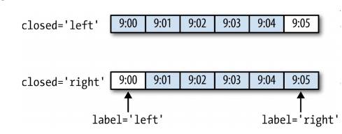
升采样与插值
- 需要设置升频之后的插值方式，基本上和
fillna和reindex方法一致
df_hour = df_daily.resample("h").asfreq() # 不填充
df_hour = df_daily.resample("h").ffill() # 向前填充OHLC重采样
ts.resample(freq).ohlc()是 Pandas 中用于时间序列重采样的一种方法，ohlc 是Open, High, Low, Close 的缩写，主要用于处理金融时间序列数据（如股票价格或交易量）。- 调用后，pandas自动计算窗口期内的最大值、最小值、第一个值、最后一个值，并返回一个四列的Dataframe
ts.resample('5min').ohlc()通过时期进行重采样
本节待补。
移动窗口函数
- 移动窗口按顺序计算局部统计量，例如移动平均，用于观察趋势和短期波动。
rolling(250)使用最近 250 个观测，股票日线中通常对应 250 个有效交易日；rolling('250D')使用 250 日的时间跨度。整数窗口默认要求有完整窗口的观测数，时间窗口的min_periods默认是 1。
close_px_all['AAPL'].plot() # 苹果公司的股价
close_px_all['AAPL'].rolling(250).mean().plot() # 苹果公司股价最近 250 个日线观测的移动平均
aapl_std250 =close_px_all.AAPL.rolling(250, min_periods=10).std() # 计算滚动标准差（波动率）
# min_periods指定了最小的计算标准，如果不满足，则返回NaN

指数加权移动平均法 EWM
设 \(x_t\) 为当前观测，\(y_t\) 为指数加权均值。没有缺失值时，adjust=False 使用递推：
span 控制衰减快慢，不是截断历史的固定窗口。默认 adjust=True 时，用指数衰减的历史权重，并用权重之和归一化：
调用 ts.ewm(span=30).mean()；也可指定 alpha 代替 span。min_periods 控制产生结果所需的有效观测数。
# EWMA30与MA30的对比
aapl_px = close_px_all.AAPL['2006':'2007']
ma30 = aapl_px.rolling(30, min_periods=20).mean()
ewma30 = aapl_px.ewm(span=30).mean()
fig,ax = plt.subplots(1,1)
ax.plot(ma30, 'k-', label='MA30')
ax.plot(ewma30,'g--', label='EWMA30')
plt.legend(loc='best')
二元移动窗口函数——协方差与相关系数计算
rolling_corr()方法计算dataframe所有列与TS之间的协方差；rolling_cov()则是协方差
# returns为一个dataframe，spx_ret为标普500的return，意在每只股票与spx_ret之间的相关性
corr = returns.rolling(125, min_periods=100).corr(spx_rets)自定义窗口函数
rolling_apply() 方法
移动时区
（这个暂时用不到，先放下）
数据连接与透视
分层索引 hierarchical indexing
- 分层索引指的是在一个轴上拥有两个及以上的索引
data = pd.Series(np.random.randn(9), index=[['a','a','a','b','b','b','c','c','c'],[1,2,3,1,3,1,2,2,3]])
data.index # MutiIndex类型
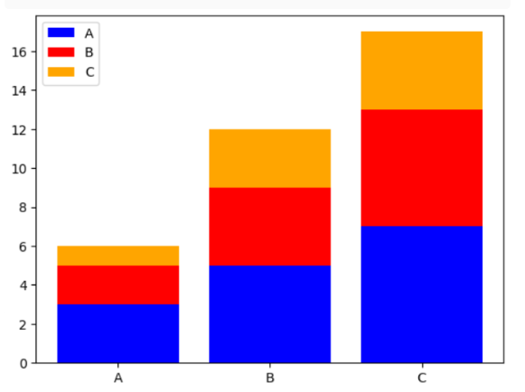
data.loc['b'] # 进行部分索引
data.loc['b':'c']
data.loc[['b','a']]
data.loc[:,[1,2]] # 在内层中进行选取- 利用
stack和unstack在多层索引Series和DataFrame之间进行转换
data_unstack = data.unstack()
data_or = data_stack()
# 注意，不能存在重复索引，否则会报错- 对于DataFrame来说，每条轴都可以有分层索引
frame = pd.DataFrame(np.arange(12).reshape((4,3)), index=[
['a','a','b','b'],
[1,2,1,2]],
columns=[
['WW','WW','CC'],
['GG','GG','RR']
])
frame.index.names = ['key1','key2']
frame.index.names = ['state','color']
# 传入多层索引要使用**分层列表**的结构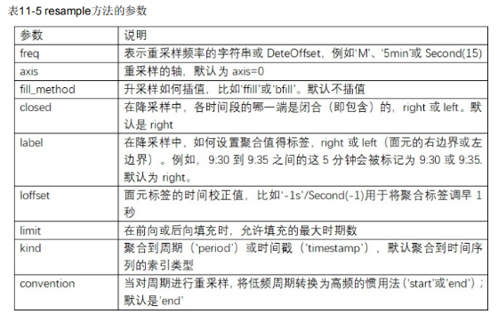
- 单独创建MultiIndex并复用
columns1 = ['WW','GG','GG']
columns2 = ['aa','bb','cc']
pd.MultiIndex.from_arrays([columns1, columns2])索引交换
- 调整某条轴上各级别的顺序：
frame.swaplevel(0,1)
# 或
frame.swaplevel('key1','key2')- swaplevel常与sort_index连用：
frame.swaplevel(0,1).sort_index(level=0)
列与索引的转化
- 用set_index()将DataFrame的列转化为索引，用reset_index将索引还原到列中：
frame2 = frame.set_index(['a','b'], drop=True)
frame2.reset_index()数据集合并
merge操作（数据库风格）
df1 = pd.DataFrame({ 'A': ['A0', 'A1', 'A2', 'A3'],
'B': ['B0', 'B1', 'B2', 'B3'],
'key': ['K0', 'K1', 'K2', 'K3'] })
df2 = pd.DataFrame({ 'C': ['C0', 'C1', 'C2', 'C3'],
'D': ['D0', 'D1', 'D2', 'D3'],
'key': ['K0', 'K1', 'K2', 'K3'] })
result = pd.merge(df1, df2, on='key')- on参数用于指定连接键
- how参数用于指定连接方式

- 如果左表和右表的key列列名不同，可以这样操作：
result = pd.merge(df1, df2, left_on='key_of_df1', right_on='key_of_df2')- 多对多合并：例如df1中key有两个K0，df2中key有三个K0，合并后的key有六个K0
- 多键合并（略）
- 在进行列列连接时，原有的DataFrame索引会被丢弃
- 传入left_index=True或right_index=True来实现按索引合并
concat操作
- 与merge不同， concat是基于索引（标签）进行拼接的，没有了key的参与
s1 = pd.Series([0, 1], index=['a', 'b'])
s2 = pd.Series([2, 3, 4], index=['c', 'd', 'e'])
s3 = pd.Series([5, 6], index=['f', 'g'])
res = pd.concat([s1,s2,s3], axis=0)
res2 = pd.concat([s1,s2,s3], axis=1)
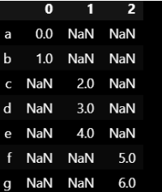
- 当拼接的方向存在重复索引时，可以指定join=或join_axes=指定参与的索引
- 可以指定
keys来区分参与连接的片段。
res = pd.concat([s1,s2,s3], axis=0, keys=['A','B','C'])
res2 = pd.concat([s1,s2,s3], axis=1,keys=['A','B','C'])
# 等价于下面这种方法
res = pd.concat({'A':s1,
'B':s2,
'C':s3},
axis=1)
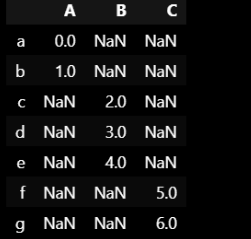
- ignore_index = True用于不保留连接轴上的索引，产生一组新的索引
combine_first方法
- DataFrame.combine_first(other)，用other中对应的数据填充df1
np.concatenate方法
- 数组拼接的方法，要注意拼接的方向必须具有相同的形状
重塑与轴向旋转
- df.pivot()
- df.pivot_table()
pivot_table方法允许有重复索引，可以通过指定aggfunc= 参数指定聚合方式
- df.melt()
数据聚合与分组
主要是groupby方法
机器学习篇
神经网络篇
深度前馈网络 (多层感知机)
神经网络原理
相关笔记：《机器学习原理与实践》。
对于第 \(\ell\) 层，输入为 \(a^{[\ell-1]}\)。前向过程先做仿射变换，再逐元素应用激活函数：
对非输出层使用链式法则；\(\odot\) 表示逐元素相乘。下面是对单个样本的梯度：
Pytorch基础
pytorch张量计算
张量(Tensor): Pytorch基本数据类型，类似于ndarrays。不同于向量和矩阵只有一维和两维，张量可以有任意多个维度。在机器学习和深度学习中，张量是一种重要的数据结构，用于表示输入和输出数据。
标量 - 零维张量
向量 - 一维张量
二维矩阵 - 二维张量
多维矩阵 - 多维张量

张量初始化
- 直接定义
- 生成全0、全1、服从各种分布的随机
- 从array转换
x = torch.tensor([[1, 2]]) # torch.Size([1, 2])
y = torch.tensor([[1], [2]]) # torch.Size([2, 1])# 生成全零的张量
torch.zeros((3, 4))
'''
tensor([[0., 0., 0., 0.],
[0., 0., 0., 0.],
[0., 0., 0., 0.]])
'''
# 生成全1的张量
torch.ones((3, 4))
'''
tensor([[1., 1., 1., 1.],
[1., 1., 1., 1.],
[1., 1., 1., 1.]])
'''# 三行四列的张量对象，每个元素为 0 到 9 的随机整数（上界 10 不包含）
torch.randint(low=0, high=10, size=(3,4))
# 三行四列的张量对象，每个元素为0-1的随机浮点值
torch.rand(3, 4)
# 三行四列的张量对象，每个对象服从正态分布
torch.randn((3, 4))
# 直接用torch.tensor(array)转化成张量
x = np.array([[1, 2, 3],
[4, 5, 6]])
torch.tensor(x)张量运算
1. 加减乘除
tensor = torch.tensor([[1, 2, 3, 4],
[5, 6, 7, 8]])
print(tensor.add(1))
print(tensor.subtract(5))
print(tensor.div(10))
print(tensor.multiply(10))
'''
tensor([[2, 3, 4, 5],
[6, 7, 8, 9]])
tensor([[-4, -3, -2, -1],
[ 0, 1, 2, 3]])
tensor([[0.1000, 0.2000, 0.3000, 0.4000],
[0.5000, 0.6000, 0.7000, 0.8000]])
tensor([[10, 20, 30, 40],
[50, 60, 70, 80]])
'''2. 张量整形（view方法、squeeze unsqueeze方法、None索引方法）
tensor = torch.tensor([[1, 2, 3, 4],
[5, 6, 7, 8]]) # torch.Size([2, 4])
tensor3d = tensor.view(1, 2, 4) # torch.Size([1, 2, 4])tensor3d = tensor.unsqueeze(0) # 在axis=0插入一个新维度
tensor_back = tensor3d.squeeze(0) # 删除axis=0的维度
z1, z2, z3 = tensorX[None], tensorX[:, None], tensor[:,:,None]
# 分别在axis为0,1,2插入了一个维度3. 张量乘法（matmul @ 和矩阵乘法类似）
tensorA = torch.rand((3, 4))
tensorB = torch.rand((4, 3))
torch.matmul(tensorA, tensorB)4. 张量连接（cat方法）
tensorC = torch.randn(10,10,10)
tensorcat0 = torch.cat([tensorC, tensorC], axis=0) # torch.Size([20, 10, 10])5. max和min
val = tensorD.max() # 提取张量的最大值
valm, argm = tensorD.max(dim=0) # 如果指定了dim, 则返回最大值与位置索引
'''
tensor(24)
tensor([20, 21, 22, 23, 24])
tensor([4, 4, 4, 4, 4])
'''6. 张量重排（permute方法）
tensorO = torch.randn(10, 20, 30)
tensorT = tensorO.permute(2, 0, 1)
print(f"tensorO.shape {tensorO.shape}; tensorT.shape {tensorT.shape}")
'''
tensorO.shape torch.Size([10, 20, 30]); tensorT.shape torch.Size([30, 10, 20])
'''总结：基本上我们可以使用与Numpy完全相同的语法来执行张量计算
张量对象的自动梯度计算
在定义一个张量对象的时候，可以指定它需要计算梯度
x = torch.tensor([
[2., 1.],
[-2., -1.]], requires_grad=True) # 只有浮点或复数张量才能启用梯度跟踪# 定义计算的函数
output = x.pow(2).sum()
output.backward() # 由于output是由x计算得到的标量，调用.backward会自动计算output对x的梯度
x.grad # x的梯度矩阵
'''
tensor([[ 4., 2.],
[-4., -2.]])
'''张量相对NumPy数组的优势
张量可以使用GPU进行计算
在计算最佳权重值时，会对每个权重进行微量修改，并观察它对降低损失值的影响。需要注意的是，一个权重更新的损失计算不影响同一迭代中其他权重更新的损失计算。因此，每个权重更新可以由不同的核心并行进行，而非顺序更新权重，在这种情况下，GPU 与 CPU 相比更具优势，因为 GPU 通常包含数千个核
使用Pytorch构建MLP网络
1. 定义数据
# 将输入列表转换为张量对象
X = torch.tensor(x).float()
Y = torch.tensor(y).float()
# 将X, Y注册到device
device = 'cuda' if torch.cuda.is_available() else 'cpu'
X = X.to(device)
Y = Y.to(device)2. 定义神经网络类
class MyNeuralNet(nn.Module):
def __init__(self):
super().__init__()
self.hidden_layer = nn.Linear(2, 8) # 全连接层
self.activation = nn.ReLU() # ReLU激活函数
self.output_layer = nn.Linear(8, 1) # 全连接层
def forward(self, x):
'''前向传播方法，把所有神经网络的组件都连接到一起
必须使用forward作为前向传播函数名'''
x = self.hidden_layer(x)
x = self.activation(x)
x = self.output_layer(x)
return x这里之所以必须使用forward方法，是因为nn.Module内部实现了一个__call__方法：
def __call__(self, *args, **kwargs):
return self.forward(*args, **kwargs)所以在写
model = MyNeuralNet()
y = model(x)的时候，Python会寻找__call__方法，从而实现y = model.forward(x)
3. 实例化与访问参数（初始化参数，每次都是随机的）
net = MyNeuralNet()
net.hidden_layer.weight
'''
Parameter containing:
tensor([[-0.0044, -0.0182],
[ 0.4021, 0.2870],
[ 0.6419, 0.2974],
[ 0.3441, 0.0716],
[-0.2929, 0.0159],
[ 0.1147, -0.6256],
[ 0.3538, -0.2163],
[-0.1968, 0.5575]], requires_grad=True)
'''
net.parameters() # 访问所有参数4. 定义损失函数、前向传播、计算损失
loss_func = nn.MSELoss() # 定义损失函数
_Y = net(X) # 这步是进行前向传播，得到预测值
loss = loss_func(_Y, Y) # 计算损失5. 定义优化器，输入为神经网络的参数（权重和偏置）与学习率，以随机梯度下降（SGD）为例
# 定义优化器
from torch.optim import SGD
opt = SGD(net.parameters, lr=0.001)6. 训练epoch
hist_loss = []
for _ in range(50):
opt.zero_grad() # 把模型所有参数的梯度清零
loss_value = loss_func(net(X), Y)
loss_value.backward() # 执行反向传播
opt.step() #
hist_loss.append(loss_value.item())7. 模型测试
val_x = torch.tensor([[10, 11]]).float().to(device)
net(val_x)神经网络数据加载
批大小（batch size）是指计算损失值或者更新权重时考虑的数据样本数。
- 如果数据集有数百万个样本，一次将所有数据点用于更新权重并不是最佳选择
- 批大小用于指定抽样样本数，对数据进行抽样
- 定义Mydataset继承自Dataset, 接收一个batch的x, y, 指定固定方法__len__和__getitem__, 之后将实例对象传入DataLoader
# 创建数据集类MyDataset
class MyDataSet(Dataset):
'''在MyDataSet类中，储存数据信息以便可以将一个batch数据点捆绑在一起，
并通过一次前向和反向传播更新权重'''
def __init__(self, x, y):
'''该方法接受输入和输出，并将它们转化为torch浮点对象'''
self.x = x.clone().detach()
self.y = y.clone().detach()
def __len__(self):
'''指定输入数据集的长度'''
return len(self.x)
def __getitem__(self, ix):
'''获取指定的数据样本'''
return self.x[ix], self.y[ix]
ds = MyDataSet(X, Y)
# 通过DataLoader传递数据集实例，从原始输入输出张量对象获取batch_size个数据点
dl = DataLoader(ds, batch_size=2, shuffle=True)
'''训练过程， MLP类略'''
hist_loss = []
for _ in range(50):
for data in dl:
x, y = data
opt.zero_grad()
loss_value = loss_func(net(x), y)
loss_value.backward()
opt.step()
hist_loss.append(loss_value.item())例如：epoch为50，把样本分割成两个batch, 那就要iter100次
使用Sequential类定义模型架构
torch.nn.Sequential 是一个“按顺序堆层”的容器，通过Sequential定义网络层和激活函数，它可以按定义顺序执行forward。简化了过程
- 如果模型只是线性的网络结构，可以写Sequential;
- 如果存在分支或跳连，就必须自己定义类，写forward
model = nn.Sequential(
nn.Linear(2, 8),
nn.ReLU(),
nn.Linear(8, 1)
).to(device)使用torchsummary.summary查看网络结构
from torchsummary import summary
summary(model, (2,))----------------------------------------------------------------
Layer (type) Output Shape Param #
================================================================
Linear-1 [-1, 8] 24
ReLU-2 [-1, 8] 0
Linear-3 [-1, 1] 9
================================================================
Total params: 33
Trainable params: 33
Non-trainable params: 0
----------------------------------------------------------------
Input size (MB): 0.00
Forward/backward pass size (MB): 0.00
Params size (MB): 0.00
Estimated Total Size (MB): 0.00
----------------------------------------------------------------模型保存与加载
model.state_dict()用于把模型的所有参数和持久化的缓冲区打包成一个字典，方便保存和加载
state = model.state_dict()
'''例如：2-8-1的网络
hidden_layer.weight torch.Size([8, 2])
hidden_layer.bias torch.Size([8])
output_layer.weight torch.Size([1, 8])
output_layer.bias torch.Size([1])
'''保存与加载
torch.save(model.state_dict(), "model.pth")
model = MyNeuralNet() # 模型结构必须一致
model.load_state_dict(torch.load("model.pth"))state_dict 只存参数，不存模型结构。所以恢复的时候要你自己定义模型类。
如果你在 GPU 上训练，但想在 CPU 上加载，要加 map_location=torch.device('cpu') 。
里面既有可训练参数（requires_grad=True ），也有 buffer（比如 BatchNorm 的统计量），都能保存下来。
深度学习工程策略
激活函数
激活函数本质上是给神经元“加非线性”（如果整个神经网络都是线性的，等价于一个线性网络）
Sigmoid
sigmoid的导数
- 优点：平滑、易于求导
- Sigmoid 饱和时局部导数接近 0，且局部导数最大为 \(1/4\)。整层梯度还要乘权重矩阵，不能认为梯度每层固定缩小到四分之一。
Tanh
tanh的导数：
- Tanh 的输出范围为 \((-1,1)\)，以 0 为中心；这在一些模型中有利于优化，但不是收敛更快的保证。
- 输入绝对值很大时，Tanh 也会饱和，导数趋近 0。
ReLU
修正线性单元（Rectified Linear Unit）
特点：
- 如果某个神经元大于0，导数为1，梯度可以原封不动传递回来；
- 负半轴导数为 0；如果一个单元对训练样本长期处于负半轴，它可能失活。一次出现负输入并不意味着永久失活。
- ReLU 的正半轴不饱和，可以缓解部分梯度衰减，但不能保证深层网络不出现梯度消失。
- 其他变体：Leaky ReLU\ELU（不让负区间直接归零）
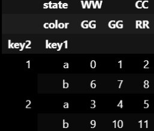
损失函数
本节待补。
Fashion-MNIST 数据集实战
1. 导入数据
- data_folder为数据集保存和读取的路径；当download为True时，程序会从网络上下载数据集并保存到文件夹里，为False时会直接尝试从本地读取文件。train表示是否加载6万张训练集，如果为False，则只加载测试集。
from torch.utils.data import Dataset, DataLoader, random_split
from torchvision import datasets
import torch
import torch.nn as nn
import numpy as np
import matplotlib as plt
data_folder = './data/FMNIST'
fmnist = datasets.FashionMNIST(data_folder, download=False, train=True)
tr_images = fmnist.data
tr_targets = fmnist.targets2. 绘制随机图像样本
# 绘制随机图像样本
import matplotlib.pyplot as plt
import numpy as np
R, C = len(tr_targets.unique()), 10
fig, ax = plt.subplots(R, C, figsize=(10,10))
for label_class, plot_row in enumerate(ax):
label_x_rows = np.where(tr_targets == label_class)[0] # 类别*的索引标签
for plot_cell in plot_row:
plot_cell.grid(False)
plot_cell.axis(False)
ix = np.random.choice(label_x_rows)
x, y = tr_images[ix], tr_targets[ix]
plot_cell.imshow(x)
3. 创建数据集并定义数据获取函数
- view是张量重塑操作，原本
x是形状[N, 1, 28, 28]（N 张图片），用了x.view(-1, 28*28)后变成[N, 784]，把每张 28×28 的图片拉平成一维向量。-1表示自动推算这一维的大小（即 N）
class FMNISTDataset(Dataset):
def __init__(self, x, y):
x = x.float()
x = x.view(-1, 28*28)
self.x, self.y = x, y
def __getitem__(self, ix):
x, y = self.x[ix], self.y[ix]
return x, y
def __len__(self):
return len(self.x)
# 在官方训练集内固定切分；官方测试集留待最终评估。
def get_data():
full = FMNISTDataset(tr_images, tr_targets)
train, val = random_split(full, [50_000, 10_000],
generator=torch.Generator().manual_seed(42))
return (DataLoader(train, batch_size=32, shuffle=True),
DataLoader(val, batch_size=32, shuffle=False))4. 定义模型、训练过程、精确度、损失
- 多分类可用
nn.CrossEntropyLoss；模型输出未归一化的 logits，直接与类别索引一起传给损失函数，无需先做 softmax。
from torch.optim import SGD
def get_model():
model = nn.Sequential(
nn.Linear(28*28, 1000),
nn.ReLU(),
nn.Linear(1000, 10)
)
lossFunc = nn.CrossEntropyLoss()
optimizer = SGD(model.parameters(), lr=0.001)
return model, lossFunc, optimizer
# 分批训练
def train_batch(x, y, model, optimizer, lossFunc):
model.train()
optimizer.zero_grad()
_y = model(x) # shape: (batch_size, classes)
loss = lossFunc(_y, y)
loss.backward()
optimizer.step()
return loss.item()5. 定义模型评估组件（精确度、损失）
@torch.no_grad()关闭梯度记录，不会改变模型的训练或评估模式。model.eval()的作用是把模型切换到“评估模式”。这会影响像 Dropout、BatchNorm 这种层的行为——它们在训练时会随机或动态更新，但在验证/测试时要固定结果，否则评估会不稳定。torch.max(x)返回全局最大值；x.max(dim=-1)返回最后一维的最大值和索引。分类 logits 的最后一维对应类别。
@torch.no_grad()
def accuracy(x, y, model):
model.eval()
_y = model(x) # 为每一个样本的10个类别给出预测分数
max_values, argmaxes = _y.max(-1) # 分数最大的类别
is_correct = argmaxes == y # 预测对了吗？
return is_correct.cpu().tolist()
@torch.no_grad()
def val_loss(x, y, model, lossFunc):
model.eval()
_y = model(x)
val_loss = lossFunc(_y, y)
return val_loss.item()6. 进行训练
- 每轮记录按样本数加权的训练损失、验证损失和验证集准确率。验证集与训练集不重叠，不能把训练集准确率当作泛化结果。
trn_dl, val_dl = get_data()
model, lossFunc, optimizer = get_model()
losses, val_losses, accuracies = [], [], []
for epoch in range(50):
train_loss_total = train_count = 0
for x, y in trn_dl:
loss = train_batch(x, y, model, optimizer, lossFunc)
train_loss_total += loss * y.numel()
train_count += y.numel()
model.eval()
val_loss_total = val_correct = val_count = 0
with torch.no_grad():
for x, y in val_dl:
logits = model(x)
val_loss_total += lossFunc(logits, y).item() * y.numel()
val_correct += (logits.argmax(dim=1) == y).sum().item()
val_count += y.numel()
losses.append(train_loss_total / train_count)
val_losses.append(val_loss_total / val_count)
accuracies.append(val_correct / val_count)7. 查看结果
Loss
Accuracy
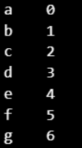

学习率
本节待补。
过拟合与正则化
批归一化
本节待补。
优化器
优化器的本质是利用数值方法逼近最优参数（最小化Loss）
序列建模
循环神经网络（RNN）和长短期记忆网络（LSTM）是两种常见的处理序列数据的架构，RNN是一种具有循环连接的神经网络，它使其在处理序列数据时可以考虑上下文信息。但是当序列较长时，过去的信息难以正确传递到当前步。LSTM引入门控机制来有效处理长期依赖关系。
常见的序列模型：
- ARIMA
- RNN
- LSTM
- GRU
循环神经网络
RNN 的隐藏状态依赖当前输入和上一个时间步的隐藏状态。普通前馈层可写成 \(h=f(W_x x+b)\)；循环层还保留从 \(h_{t-1}\) 到 \(h_t\) 的连接：
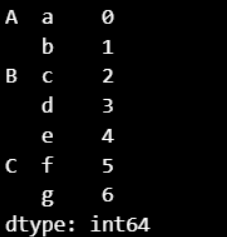
- RNN的训练过程跟普通的神经网络一样，也是采用反向传播梯度下降算法，只不过在计算隐层的时候需要引入之前的数据。
- 由于时序上的层级结构，使得RNN在输入输出关系上具备了更大的灵活性，能够解决不同的问题。结构可以为：
- 1 to N：输入一张图片，输出一段话
- N to 1：输入可以是一段话，输出可以是一种情感类别的判定或者是一张图片。
- N to N：这种RNN可以用来生成文章、诗歌甚至代码。
- N to M: 也被称Encoder-Decoder模型/Seq2Seq模型， 先将输入数据编码成上下文向量，然后通过它来输出预测的序列。这种RNN在机器翻译、文本摘要、阅读理解、对话生成等很多领域都有着极为广泛的应用。
长短期记忆网络
LSTM 在 RNN 的基础上引入门控与细胞状态。细胞状态提供了一条可以跨越多个时间步的梯度路径，有助于缓解梯度消失，但不能保证梯度始终不衰减。

- 输入门（Input Gate）：决定当前输入的信息是否更新到记忆单元中。输入门包含两个部分：一个是 Sigmoid 激活函数，决定哪些信息要更新；另一个是 tanh 激活函数，生成新的候选值（可能被加入到记忆单元中）。

\(i_t\) 控制新信息写入多少，\(\tilde c_t\) 是候选细胞状态。令 \(u_t=[h_{t-1};x_t]\) 为前一隐藏状态和当前输入的拼接：
- 遗忘门 \(f_t=\sigma(W_f u_t+b_f)\) 决定旧状态各分量保留的比例。分量越接近 0，遗忘越多。
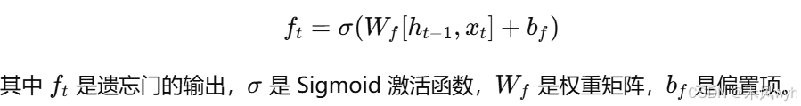
- 细胞状态更新：旧状态经遗忘门保留一部分，再加入输入门允许写入的候选信息。

输出门决定细胞状态中有多少信息作为当前隐藏状态输出：
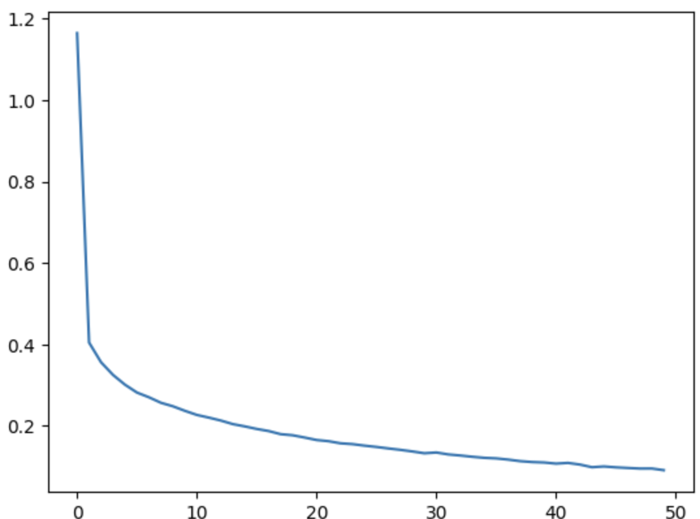
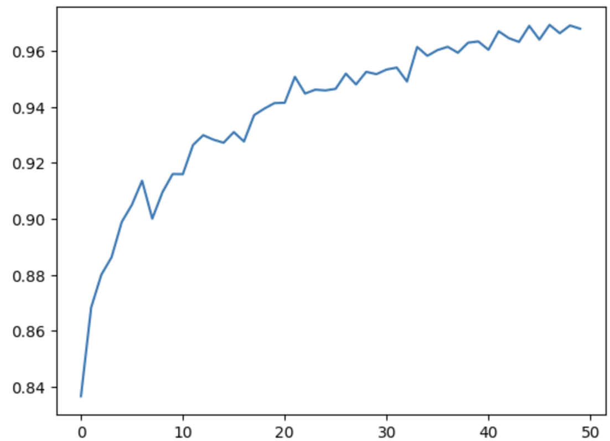
图神经网络
图的表示
在图神经网络中，常见的表示方法有邻接矩阵、度矩阵、拉普拉斯矩阵等。

图神经网络 GNN
图卷积网络 GCN
本节待补。
GraphSAGE 架构
本节待补。
图注意力网络 GAT
本节待补。
注意力机制与Transformer架构
seq2seq框架
注意力机制
起初的注意力机制将注意力汇聚的输出计算成为值的加权和。通过Query与Key的注意力汇聚（即，给定一个 Query，计算Query与Key的相关性，然后根据Query与Key的相关性去和对应的Value进行相乘）实现对Value的注意力权重分配，生成最终的输出结果。
这里面有几个核心的概念：
假设你在读一段话，要理解“it”指代什么，你会在脑中去“检索”前文中哪个词最相关。
- Query: 就是it这个单词
- key: 若干候选项
- values: 每个候选项携带的信息（values）就是它们的语义内容
两种注意力架构：
- 加性注意力（Additive Attention）

- 缩放点积注意力（Transformer）


用Pytorch实现加性注意力
class Attention(nn.Module):
def __init__(self, n_hidden_enc, n_hidden_dec):
super().__init__()
self.h_hidden_enc = n_hidden_enc # encoder隐藏层维度， 例如为2
self.h_hidden_dec = n_hidden_dec # decoder隐藏层维度， 例如为3
self.W = nn.Linear(2*n_hidden_enc + n_hidden_dec, n_hidden_dec, bias=False) # 线性层：输入为双向RNN+拼接 -> 输出为decoder隐藏层维度 (7, 3)
self.V = nn.Parameter(torch.rand(n_hidden_dec)) # 初始化参数
def forward(self, hidden_dec, last_layer_enc):
'''last_layer_enc指的是seq2seq框架中最后一层的输出, shape为[b, src_seq_len, n_hidden_enc]'''
batch_size = last_layer_enc.size(0)
src_seq_len = last_layer_enc.size(1)
hidden_dec = hidden_dec[:, -1, :].unsqueeze(1).repeat(1, src_seq_len, 1) # 在dim1上复制len次，可以理解为只取每个batch的最后一个
tanh_W_s_h = torch.tanh(self.W(torch.cat((hidden_dec, last_layer_enc), dim=2))) # 把encoder和decoder横向拼接，用tanh激活 size [b, seq_len, n_hidden_dec]
tanh_W_s_h = tanh_W_s_h.permute(0, 2, 1) # permute为维度调换， [b, n_hidde_dec, seq_len]
V = self.V.repeat(batch_size, 1).unsqueeze(1) #[b, 1, n_hidden_dec], 把[n_hidden_dec]先复制b次，再在第一个维度展开
e = torch.bmm(V, tanh_W_s_h).squeeze(1) #bmm为批量矩阵乘法，shape [b, seq_len]
att_weights = F.softmax(e, dim=1) #[b, src_seq_len]
return att_weights
自注意力机制
注意力机制的思想最早来自于 seq2seq + attention 框架（比如机器翻译），它的目标是：
让 decoder 在生成每个词时，都能自动挑选 encoder 输出里哪些信息更重要。

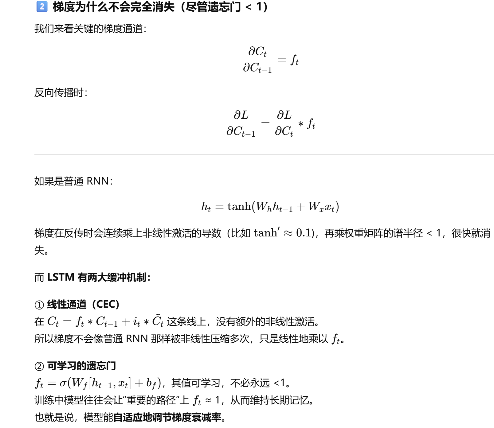
以下以计算第一个位置的输出 \(b^{(1)}\) 为例。
1. Embedding：
用 \(W_e\) 得到嵌入，再分别投影到查询、键和值。三组投影矩阵各自跨位置共享，但彼此不同。
2. qk操作
用第一个位置的查询与每个键计算缩放点积，再沿所有键做 softmax。\(d_k\) 是键向量的维度。
3. v操作
用归一化的权重计算值向量的加权和：